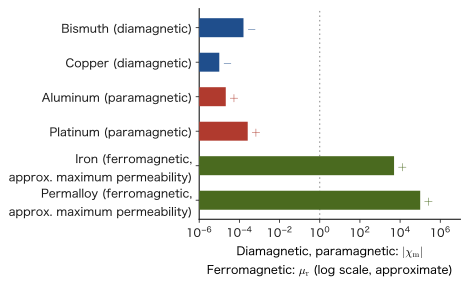

Chapter 41Electric and Magnetic Fields in Matter — Dielectrics and Magnetic Materials
The experiment of rubbing a plastic sheet so that it picks up scraps of paper, a magnet sticking to a refrigerator, the white ceramics packed into the capacitors in electronic components, the magnetic thin film that records information inside a hard disk—all of these work because “matter” placed in an electric or magnetic field responds to the field and changes its own state. In vacuum, the electric field was produced by charges alone and the magnetic field by currents alone (Chapters 35–39). However, when an insulator or a magnetic material is placed in an electric or magnetic field, the countless atoms and molecules that make up the material slightly change their orientation or become deformed in response to the field. As a result, charges and currents that originate in the material itself, distinct from the charges and currents supplied from outside, newly appear inside the material and on its surface.
The quantities that express this response of matter collectively at the macroscopic level are the polarization $\bm P$ on the electric side and the magnetization $\bm M$ on the magnetic side. If we then define $\bm D=\varepsilon_0\bm E+\bm P$ and $\bm H=\bm B/\mu_0-\bm M$, the quantities $\bm D$ and $\bm H$ have the response of matter absorbed into them in advance, and the laws in matter can be written in the simple forms $\operatorname{div}\bm D=\rho_{\mathrm{f}}$ and $\operatorname{rot}\bm H=\bm j_{\mathrm{f}}$. In Chapters 35 and 38 we used the two quantities $\bm D$ and $\bm H$ as though they were nearly the same as the pair $\bm E,\bm B$; that was because we were previewing this general theory in matter. Why not make do with just $\bm E$ and $\bm B$ from the start? The answer is the theme of this chapter.
Let us first list the connections with high school physics.
- The capacitor formula you memorized in high school as $C=\varepsilon_{\mathrm{r}} C_0$ can be derived from the polarization and $\bm D$ in Section 41.1.3.
- In Section 41.2 you will see why, when an iron core is inserted into a solenoid for which you learned $B=\mu_0nI$ in high school, the magnetic field becomes $\mu_{\mathrm{r}}$ times larger.
- The phenomenon that “iron becomes a magnet” is expressed quantitatively by the hysteresis curve (Section 41.2.4), and this lets us explain the difference between the materials of a transformer core and of a permanent magnet.
For those who study materials science, dielectrics (the dielectric layers of capacitors, ferroelectric memory, piezoelectric sensors) and magnetic materials (transformer cores, hard disks, permanent magnets) are fields that, even within electromagnetism, connect especially directly to engineering applications, and the content of this chapter will serve as a foundation for the specialized courses to come.
- The definition of the polarization $\bm P$; the derivation of the bound charges that arise inside and on the surface of matter, $\rho_{\mathrm{b}}=-\operatorname{div}\bm P$ and $\sigma_{\mathrm{b}}=\bm P\cdot\bm n$; and the general definition of the electric displacement (electric flux density), $\bm D=\varepsilon_0\bm E+\bm P$
- The introduction of the relative permittivity $\varepsilon_{\mathrm{r}}$ for linear dielectrics ($\bm D=\varepsilon\bm E$, $\varepsilon=\varepsilon_0\varepsilon_{\mathrm{r}}$), and the change in the capacitance of a capacitor with a dielectric inserted, $C=\varepsilon_{\mathrm{r}}C_0$
- The three microscopic mechanisms by which polarization arises (electronic, ionic, and orientational polarization) and their response to frequency; the properties and applications of ferroelectrics (such as $\mathrm{BaTiO_3}$) and piezoelectric materials
- The definition of the magnetization $\bm M$; the derivation of the magnetization current $\bm j_{\mathrm{b}}=\operatorname{rot}\bm M$ and $\bm K_{\mathrm{b}}=\bm M\times\bm n$; and the general definition of the magnetic field strength, $\bm H=\bm B/\mu_0-\bm M$ ($\bm B=\mu_0(\bm H+\bm M)$)
- The magnetic susceptibility $\chi_{\mathrm{m}}$ and the relative permeability $\mu_{\mathrm{r}}$ ($\mu=\mu_0\mu_{\mathrm{r}}=\mu_0(1+\chi_{\mathrm{m}})$); the classification into diamagnetism, paramagnetism (Curie's law), and ferromagnetism; the hysteresis curve of a ferromagnet; and the applications of soft and hard magnetic materials (permanent magnets)
- The meaning and the conditions of validity of Gauss's law $\operatorname{div}\bm D=\rho_{\mathrm{f}}$ and Ampère's law $\operatorname{rot}\bm H=\bm j_{\mathrm{f}}$, which use only free charges and free currents; and the boundary conditions at the interfaces of dielectrics, magnetic materials, and conductors, together with the refraction of electric field lines
Related notes: This chapter supplements content that is not in the original notes. Related notes: Yasuhide Mochizuki, Physics Notes: Electromagnetism.
41.1 Dielectrics and Polarization
A dielectric is a substance that has almost no charge able to move about freely (free charge), that is, an insulator that does not conduct electricity. Glass, rubber, many ceramics, and the air in the atmosphere are examples of dielectrics. Since a dielectric has no free charge, no current flows in it. However, placing a dielectric in an electric field does not mean that nothing happens—inside each individual atom or molecule that makes up the dielectric, the positive charge (the nucleus) and the negative charge (the electron cloud) feel forces in opposite directions from the field and are pulled very slightly apart. Alternatively, a molecule that originally has an unevenness of charge (a permanent dipole moment), such as a water molecule $\mathrm{H_2O}$, rotates slightly to line up with the direction of the field. In either case, each individual atom or molecule becomes a small electric dipole in which the positive and negative charges are separated by a small distance. Seen as a whole, these countless tiny dipoles line up slightly along the direction of the field, so that the material, viewed macroscopically, ends up uniformly “polarized.”
Recall: Electric dipole moment, and its torque and energy in an external electric field
A pair of two charges $+q,-q$ of equal magnitude and opposite sign, separated by a distance $\abs{\bm d}$, is called an electric dipole, and we define its electric dipole moment as $\bm p=q\bm d$, using the vector $\bm d$ pointing from the negative charge to the positive charge (the unit is $\mathrm{C\,m}$; Section 36.8).
In a uniform electric field $\bm E$, $+q$ feels a force $q\bm E$ and $-q$ feels a force $-q\bm E$, so the net force is $\bm 0$, but the torque (moment of force) about the center of the dipole is $\tfrac12\bm d\times q\bm E+\bigl(-\tfrac12\bm d\bigr)\times(-q\bm E)=q\bm d\times\bm E$; that is, the torque is given by
\begin{equation} \bm N=\bm p\times\bm E \label{eq:41-torque} \end{equation}If $\bm p$ and $\bm E$ make an angle $\theta$, the magnitude of the torque is $pE\sin\theta$, and it acts in the direction that decreases $\theta$ (the direction that brings $\bm p$ closer to $\bm E$). The work needed to increase $\theta$ by $\dd\theta$ against this torque is $pE\sin\theta\,\dd\theta$, so the potential energy, taking $\theta=90^\circ$ as the reference, is
\begin{equation} U=-pE\cos\theta=-\bm p\cdot\bm E \label{eq:41-Uenergy} \end{equation}The energy is lowest when $\bm p\parallel\bm E$, so the dipole tends to line up along $\bm E$ (thermal motion tends to disturb this). The magnetic dipole moment $\bm m$ likewise has, in a field of magnetic flux density $\bm B$, a torque of the same form, $\bm N=\bm m\times\bm B$, and an energy $U=-\bm m\cdot\bm B$ (Section 41.2).
Unit check: $[\bm p\cdot\bm E]=\mathrm{C\,m}\times\mathrm{V/m}=\mathrm{C\,V}=\mathrm{J}$, which agrees with the unit of energy.
Definition 41.1: Polarization vector $\bm P$
Inside a dielectric, take a volume $\Delta V$ that is much larger than the size of a single atom or molecule and yet much smaller than the scale over which the material as a whole varies (it still contains countless atoms and molecules), and let $\Delta\bm p$ be the sum of the electric dipole moments contained in it. Then the quantity
\begin{equation} \bm P\equiv\frac{\Delta\bm p}{\Delta V}\qquad[\mathrm{C/m^2}] \label{eq:41-P-def} \end{equation}is called the polarization vector, or simply the polarization. That is, $\bm P$ is the “electric dipole moment per unit volume,” a vector field that tells how strongly, and in which direction, the material at each point is polarized. Where there is no electric field (or only a weak one), the individual dipoles point in random directions, or hardly any dipoles are induced in the first place, so $\bm P\approx\bm 0$; when an electric field is applied, the dipoles line up along the field, and thereby $\bm P\neq\bm 0$.
Unit check: $[\bm p]/[V]=\mathrm{C\,m}/\mathrm{m^3}=\mathrm{C/m^2}$. This is the same as the unit of surface charge density, and it agrees with that of the surface bound charge $\sigma_{\mathrm{b}}=\bm P\cdot\bm n$ that appears later.
Note that the idea behind the definition of $\bm P$ corresponds exactly to the definition of the magnetization $\bm M$ (the magnetic dipole moment per unit volume), which we study later in Section 41.2—if you remember the correspondence that the response on the electric side is $\bm P$ and the response on the magnetic side is $\bm M$, the discussion that follows will be easier to see through.
Application: Three microscopic mechanisms of polarization
The ways in which a material becomes polarized fall mainly into the following three classes (Figure 41.1). Depending on which mechanism dominates, how the relative permittivity of a dielectric (introduced in Section 41.1.2) responds to the frequency of the electric field changes greatly.
- Electronic polarization: a dipole that arises when the whole electron cloud spread around the nucleus feels a force from the field and is displaced slightly relative to the nucleus. It is present in all atoms and molecules and is the most universal mechanism. Because electrons are extremely light, they can follow even very rapid changes of the electric field (the frequency of visible light, $\sim10^{15}\ \mathrm{Hz}$).
- Ionic polarization: in an ionic crystal such as $\mathrm{NaCl}$, a dipole that arises when the positive and negative ions feel forces in opposite directions from the field and are displaced slightly within the lattice. Because ions are heavier than electrons, the response is slower, and they can follow only up to infrared frequencies ($\sim10^{13}\ \mathrm{Hz}$).
- Orientational polarization: when molecules originally have a permanent dipole moment, as water molecules do, the net polarization that arises when molecules that were pointing in random directions because of thermal motion line up, statistically and slightly, along the direction of the field once it is applied. Because the whole molecule has to rotate, this is the slowest in response of the three (for water, up to microwave frequencies, $\sim10^{10}\ \mathrm{Hz}$. A microwave oven can selectively heat water molecules because this orientational polarization absorbs the energy of the electromagnetic waves).
Example 41.1: How well do water molecules line up through orientational polarization?
The electric dipole moment of a water molecule is $p=6.2\times10^{-30}\ \mathrm{C\,m}$. When an electric field $E=1.0\times10^{6}\ \mathrm{V/m}$ is applied to water at room temperature $T=300\ \mathrm K$, find the ratio $pE/(k_{\mathrm B}T)$ of the energy by which the dipoles tend to line up with the field to the energy of thermal motion. Also, from this value, state to what extent the orientations of the molecules are aligned.
Solution. By Eq. \eqref{eq:41-Uenergy}, the magnitude of the energy by which the dipoles tend to line up is $pE$, and a measure of the energy of thermal motion is $k_{\mathrm B}T$ ($k_{\mathrm B}=1.380\,649\times10^{-23}\ \mathrm{J/K}$).
$$ \frac{pE}{k_{\mathrm B}T}=\frac{(6.2\times10^{-30}\ \mathrm{C\,m})(1.0\times10^{6}\ \mathrm{V/m})}{(1.380\,649\times10^{-23}\ \mathrm{J/K})(300\ \mathrm K)}\approx1.5\times10^{-3} $$(Unit check: the numerator is $\mathrm{C\,m\cdot V/m}=\mathrm{C\,V}=\mathrm J$, which agrees with the $\mathrm{J}$ in the denominator, so the ratio is dimensionless.) Since this ratio is much smaller than $1$, thermal motion overwhelmingly dominates, and the orientations of the molecules remain almost random. According to statistical mechanics, when the ratio $x=pE/(k_{\mathrm B}T)$ is small, the average component of each molecule's dipole moment along the direction of the field is $p\,x/3$ (the factor $1/3$ comes from averaging over orientations in three dimensions), which is proportional to the electric field. That is, only about $x/3\approx5\times10^{-4}$ of $p$ is aligned—roughly one molecule's worth in every 2000. However, water contains about $3\times10^{28}$ molecules in $1\ \mathrm{m^3}$, so this slight bias accumulates into a macroscopic polarization $\bm P$. Moreover, the fact that “the slight bias is proportional to $\bm E$” is the microscopic basis of the linear dielectric $\bm P=\varepsilon_0\chi_{\mathrm{e}}\bm E$ of Section 41.1.2.
41.1.1 Derivation of the bound charges $\rho_{\mathrm{b}}=-\operatorname{div}\bm P$ and $\sigma_{\mathrm{b}}=\bm P\cdot\bm n$
Even though a polarized dielectric is electrically neutral as a whole—the total amounts of positive and negative charge do not change—an imbalance of charge appears inside it and on its surface, distinct from the free charge supplied from outside. This is called bound charge (also called polarization charge). Bound charge is charge that arises when the charges inside individual atoms and molecules are displaced slightly while remaining “bound” (unable to move freely); unlike free charge, it cannot enter or leave the material from outside. Below, starting from the polarization vector $\bm P$, we derive the general relation that gives the bound charge.
Derivation: Bound charge density $\rho_{\mathrm{b}}=-\operatorname{div}\bm P$
Consider an arbitrary closed surface $S$ (enclosing a volume $V$, with outward normal $\bm n$) inside the dielectric. A single dipole consists of $-q$ and $+q$ separated by $\bm d$ (the vector pointing from the negative charge to the positive charge), so that $\bm p=q\bm d$. Let $N_{\mathrm d}$ be the number of dipoles per unit volume, and for simplicity suppose that every dipole has the same $\bm p$ (then $\bm P=N_{\mathrm d}\bm p=N_{\mathrm d}q\bm d$).
Focus on a small surface element $\dd S$ of $S$. The dipoles that carry positive charge outward across $S$ are those whose negative charge is inside $S$ and whose positive charge is outside. The negative charge of such a dipole lies in a slanted column (the parallelogram in Figure 41.2) that has $\dd S$ as its base and is displaced by $-\bm d$. The height of the column equals the normal component $\bm d\cdot\bm n$ of $\bm d$, so the volume of the column is $(\bm d\cdot\bm n)\,\dd S$ and the number of dipoles in it is $N_{\mathrm d}(\bm d\cdot\bm n)\,\dd S$ (when $\bm d\cdot\bm n\lt0$, this becomes a count of the dipoles whose positive charge comes in toward the inside, and the same formula holds with a sign). Since each dipole carries positive charge $q$ outward, the charge carried outward through $\dd S$ is
$$ N_{\mathrm d}q(\bm d\cdot\bm n)\,\dd S=(N_{\mathrm d}q\bm d)\cdot\bm n\,\dd S=\bm P\cdot\bm n\,\dd S $$(this is the same idea as in Chapter 35, where we likened the divergence theorem to “water welling up”). Adding this up over the whole closed surface $S$ gives the net total charge carried outward through $S$, namely $\displaystyle\oint_S\bm P\cdot\bm n\,\dd S$. Since the dielectric as a whole is neutral, an equal amount of negative charge is left behind inside $S$ to match what has gone out. That is, the total bound charge $Q_{\mathrm{b},\text{enc}}$ remaining inside $S$ is
\begin{equation} Q_{\mathrm{b},\text{enc}}=-\oint_S\bm P\cdot\bm n\,\dd S \label{eq:41-Qb-surface} \end{equation}Applying the divergence theorem (University Mathematics, Section 20.5; we also used it in Section 35.3) to the right-hand side gives $\displaystyle\oint_S\bm P\cdot\bm n\,\dd S=\int_V(\operatorname{div}\bm P)\,\dd V$. On the other hand, the left-hand side can be written, using the bound charge density $\rho_{\mathrm{b}}$, as $Q_{\mathrm{b},\text{enc}}=\displaystyle\int_V\rho_{\mathrm{b}}\,\dd V$, so
$$ \int_V\rho_{\mathrm{b}}\,\dd V=-\int_V(\operatorname{div}\bm P)\,\dd V $$holds for any volume $V$. By exactly the same argument as when we derived the differential form of Gauss's law in Section 35.3 (for the two sides to agree no matter how small the volume of integration, the integrands must be equal at every point), we obtain
\begin{equation} \rho_{\mathrm{b}}=-\operatorname{div}\bm P \label{eq:41-rhob} \end{equation}Unit check: $[\operatorname{div}\bm P]=(\mathrm{C/m^2})/\mathrm m=\mathrm{C/m^3}$, which agrees with the unit of volume charge density.
∎
Derivation: Surface bound charge density $\sigma_{\mathrm{b}}=\bm P\cdot\bm n$
Consider a surface element $\Delta S$ on the surface of the dielectric (outward normal $\bm n$). On the inner side of the surface, take a thin slanted column with base $\Delta S$ and height $\bm d\cdot\bm n$ (Figure 41.2). For the dipoles whose negative charge lies in this column, the positive charge sticks out of the surface (when $\bm d\cdot\bm n\gt0$). Inside the dielectric, a protruding positive charge overlaps the negative charge of the neighboring dipole and is canceled, but just outside the surface there is no dielectric, so there is nothing to cancel the protruding positive charge. Therefore, just outside the surface, a charge of
$$ N_{\mathrm d}q(\bm d\cdot\bm n)\,\Delta S=\bm P\cdot\bm n\,\Delta S $$remains stuck to the surface (we are regarding $\bm P=\bm 0$ outside). Dividing this by $\Delta S$, we obtain the surface bound charge density
\begin{equation} \sigma_{\mathrm{b}}=\bm P\cdot\bm n \label{eq:41-sigmab} \end{equation}(the charge is negative if $\bm P\cdot\bm n\lt0$). The unit is $[\bm P]=\mathrm{C/m^2}$, which agrees with that of surface charge density.
∎
Law 41.1: Bound charge
Inside a dielectric with polarization $\bm P$, a volume bound charge density given by $\rho_{\mathrm{b}}=-\operatorname{div}\bm P$ arises, and on its surface (outward normal $\bm n$), a surface bound charge density given by $\sigma_{\mathrm{b}}=\bm P\cdot\bm n$ arises. Adding up the bound charge over the whole dielectric gives $\displaystyle\int_V\rho_{\mathrm{b}}\,\dd V+\oint_{\partial V}\sigma_{\mathrm{b}}\,\dd S=-\int_V(\operatorname{div}\bm P)\,\dd V+\oint_{\partial V}\bm P\cdot\bm n\,\dd S=0$ (the two terms cancel by the divergence theorem), so the dielectric as a whole remains electrically neutral.
Example 41.2: Bound charge of a uniformly polarized dielectric slab (spontaneous polarization of $\mathrm{BaTiO_3}$)
Suppose a dielectric slab of thickness $d$ has a uniform polarization $\bm P=P_0\,\bm e_z$ of magnitude $P_0$ (in the $z$ direction). (a) Find the volume bound charge density $\rho_{\mathrm{b}}$ inside the slab. (b) Find the surface bound charge densities on the top face (outward normal $\bm n=\bm e_z$) and on the bottom face (outward normal $\bm n=-\bm e_z$). (c) Barium titanate $\mathrm{BaTiO_3}$ at room temperature (Section 41.1.4) has a spontaneous polarization $P_0=0.26\ \mathrm{C/m^2}$ even without an external electric field. Find the bound charge that appears on a face of area $1.0\ \mathrm{cm^2}$.
Solution. (a) Since $\bm P=(0,0,P_0)$ and $P_0$ is a constant (uniform), the divergence is
$$ \operatorname{div}\bm P=\pdiff{P_x}{x}+\pdiff{P_y}{y}+\pdiff{P_z}{z}=0+0+0=0 $$(each component is a constant independent of position, so every partial derivative is 0). By Law 41.1,
$$ \rho_{\mathrm{b}}=-\operatorname{div}\bm P=0 $$—as we saw in Figure 41.3, inside the slab the charges of neighboring dipoles exactly cancel each other, so no volume bound charge arises.
(b) By Eq. \eqref{eq:41-sigmab}, on the top face ($\bm n=\bm e_z=(0,0,1)$),
$$ \sigma_{\mathrm{b},\text{top}}=\bm P\cdot\bm n=(0,0,P_0)\cdot(0,0,1)=P_0 $$and on the bottom face ($\bm n=-\bm e_z=(0,0,-1)$),
$$ \sigma_{\mathrm{b},\text{bottom}}=\bm P\cdot\bm n=(0,0,P_0)\cdot(0,0,-1)=-P_0 $$Thus a surface bound charge of $+P_0$ appears on the top face and $-P_0$ on the bottom face; over the slab as a whole, the positive charge on the top face and the negative charge on the bottom face exactly cancel, and the net charge remains 0 (electrically neutral).
(c) $\sigma_{\mathrm{b}}=P_0=0.26\ \mathrm{C/m^2}$. The charge that appears on a face of area $S=1.0\ \mathrm{cm^2}=1.0\times10^{-4}\ \mathrm{m^2}$ is
$$ Q=\sigma_{\mathrm{b}}S=(0.26\ \mathrm{C/m^2})(1.0\times10^{-4}\ \mathrm{m^2})=2.6\times10^{-5}\ \mathrm C=26\ \mu\mathrm C $$(note that $0.26\ \mathrm{C/m^2}=26\ \mu\mathrm{C/cm^2}$). Even though no charge is supplied from outside, a single face of the dielectric carries as much as $26\ \mu\mathrm C$. The charge due to polarization, as the sum over the dipoles in the material, reaches a magnitude that can actually be measured.
Example 41.3: Bound charge when the polarization is nonuniform
A dielectric slab occupying $0\le z\le d$ (cross-sectional area $S$) has a polarization $\bm P=P_0\dfrac{z}{d}\,\bm e_z$ that varies with position. (a) Find the volume bound charge density $\rho_{\mathrm{b}}$. (b) Find the surface bound charge densities on the top face ($z=d$) and on the bottom face ($z=0$). (c) Verify that the total bound charge of the whole slab is 0.
Solution. (a) Since $P_x=P_y=0$ and $P_z=P_0z/d$,
$$ \rho_{\mathrm{b}}=-\operatorname{div}\bm P=-\pdiff{P_z}{z}=-\frac{P_0}{d} $$so a uniform negative charge density arises (the heart of the formula—that divergence creates charge—appears here). The unit is $(\mathrm{C/m^2})/\mathrm m=\mathrm{C/m^3}$.
(b) On the top face ($\bm n=\bm e_z$, $P_z=P_0$) we have $\sigma_{\mathrm{b}}=\bm P\cdot\bm n=+P_0$, and on the bottom face ($\bm n=-\bm e_z$, $P_z=0$) we have $\sigma_{\mathrm{b}}=\bm P\cdot\bm n=0$.
(c) The charge in the volume is $\rho_{\mathrm{b}}\times(Sd)=-\dfrac{P_0}{d}Sd=-P_0S$, the charge on the top face is $+P_0S$, and the charge on the bottom face is $0$. The total is $-P_0S+P_0S+0=0$, so the dielectric as a whole remains neutral. In the uniform case (Example 41.2) the charge inside was 0 and charge appeared only on the surfaces, whereas in the nonuniform case (this example) charge also appears spread throughout the interior.
41.1.2 General definition of the electric displacement $\bm D$ and the relative permittivity
The fact that bound charge arises means that, in the charge density $\rho$ on the right-hand side of Gauss's law in matter (the law that the electric field $\bm E$ satisfies in vacuum, Law 35.3, $\operatorname{div}\bm E=\rho/\varepsilon_0$), we must include not only the free charge density $\rho_{\mathrm{f}}$ applied from outside but also the bound charge density $\rho_{\mathrm{b}}$ that arises as the response of the material:
$$ \operatorname{div}\bm E=\frac{\rho_{\mathrm{f}}+\rho_{\mathrm{b}}}{\varepsilon_0}=\frac{\rho_{\mathrm{f}}}{\varepsilon_0}-\frac{\operatorname{div}\bm P}{\varepsilon_0} $$(in the last equality we used Eq. \eqref{eq:41-rhob}). Multiplying both sides by $\varepsilon_0$ and rearranging, we obtain
$$ \operatorname{div}(\varepsilon_0\bm E)+\operatorname{div}\bm P=\rho_{\mathrm{f}} \qquad\therefore\quad \operatorname{div}(\varepsilon_0\bm E+\bm P)=\rho_{\mathrm{f}} $$In order not to have to treat the bound charge $\rho_{\mathrm{b}}$ explicitly (it is the response of the material and is determined automatically through $\bm E$—a “dependent variable,” so to speak), let us give a new name to the combination $\varepsilon_0\bm E+\bm P$—this is the general definition, valid inside matter as well, of the electric displacement $\bm D$, which we introduced ahead of time as a special case in vacuum in Section 35.4.
Definition 41.2: Electric displacement (in matter in general)
Using the electric field $\bm E$ and the polarization $\bm P$, we define the electric displacement $\bm D\ [\mathrm{C/m^2}]$ by
\begin{equation} \bm D\equiv\varepsilon_0\bm E+\bm P \label{eq:41-D-general} \end{equation}In vacuum (or when matter is present but not polarized), $\bm P=\bm 0$, so Eq. \eqref{eq:41-D-general} coincides exactly with $\bm D=\varepsilon_0\bm E$ of Definition 35.4 in Chapter 35—the definition in Chapter 35 was the special case $\bm P=\bm 0$ of the present Definition 41.2.
Unit check: $[\varepsilon_0\bm E]=(\mathrm{F/m})(\mathrm{V/m})=\mathrm{C/m^2}$ ($\mathrm F=\mathrm{C/V}$), which agrees with $[\bm P]=\mathrm{C/m^2}$.
In most dielectrics (except ferroelectrics, Section 41.1.4), within the range where the electric field is not too strong, the polarization $\bm P$ is induced in proportion to the applied electric field $\bm E$—these are called linear dielectrics. If we write the constant of proportionality as the electric susceptibility $\chi_{\mathrm{e}}$ (dimensionless), then
\begin{equation} \bm P=\varepsilon_0\chi_{\mathrm{e}}\bm E \label{eq:41-P-linear} \end{equation}(as we saw in Example 41.1, microscopically this is a consequence of the fact that, for $pE/(k_{\mathrm B}T)\ll1$, “the degree of alignment is proportional to $E$”). Substituting this into Eq. \eqref{eq:41-D-general} gives
$$ \bm D=\varepsilon_0\bm E+\varepsilon_0\chi_{\mathrm{e}}\bm E=\varepsilon_0(1+\chi_{\mathrm{e}})\bm E $$so $\bm D$ is simply proportional to $\bm E$. We call this constant of proportionality, taken as a whole, the permittivity $\varepsilon\equiv\varepsilon_0(1+\chi_{\mathrm{e}})$, and we call the ratio of $\varepsilon$ to the vacuum permittivity $\varepsilon_0$ the relative permittivity $\varepsilon_{\mathrm{r}}\equiv\varepsilon/\varepsilon_0=1+\chi_{\mathrm{e}}$ (dimensionless; $\varepsilon_{\mathrm{r}}\geq1$ for a static electric field).
Law 41.2: Constitutive equation of a linear dielectric
In a linear dielectric, the simple proportionality
\begin{equation} \bm D=\varepsilon\bm E=\varepsilon_0\varepsilon_{\mathrm{r}}\bm E \label{eq:41-D-linear} \end{equation}holds between the electric displacement and the electric field (we call $\varepsilon=\varepsilon_0\varepsilon_{\mathrm{r}}$ the permittivity and $\varepsilon_{\mathrm{r}}=1+\chi_{\mathrm{e}}$ the relative permittivity). Vacuum corresponds to the limit $\chi_{\mathrm{e}}=0$, $\varepsilon_{\mathrm{r}}=1$. The relative permittivity has a definite value for each material (Table 41.1).
Caution: The range in which $\bm D=\varepsilon\bm E$ holds
Law 41.2 is an approximation valid when the material is isotropic and linear and the electric field is static (or varies slowly). (1) In crystals ($\mathrm{BaTiO_3}$, quartz, etc.), $\varepsilon$ becomes a $3\times3$ matrix (a tensor), and the directions of $\bm P$ and $\bm E$ generally differ. (2) When the electric field becomes strong, $\bm P$ is no longer proportional to $\bm E$ (especially pronounced in ferroelectrics, Section 41.1.4). (3) $\varepsilon_{\mathrm{r}}$ varies with the temperature and with the frequency of the electric field (Figure 41.4).
| Material | $\varepsilon_{\mathrm{r}}$ | Main polarization mechanisms and applications |
|---|---|---|
| Air (1 atm) | $1.0006$ | Nearly the same as vacuum |
| Plastics (polyethylene, etc.) | $2$–$3$ | Electronic polarization (plus weak orientational polarization). Insulating coatings, film capacitors |
| $\mathrm{SiO_2}$ (thermal oxide film on semiconductors) | $3.9$ | Electronic and ionic polarization. Gate insulating film of transistors |
| Glass | $4$–$7$ | Electronic and ionic polarization |
| $\mathrm{Al_2O_3}$ (alumina) | about $9$ | Ionic polarization. Ceramic substrates |
| Silicon $\mathrm{Si}$ | about $12$ | Electronic polarization (semiconductor) |
| Water ($20\ ^\circ\mathrm C$) | about $80$ | Orientational polarization (polar molecules) |
| $\mathrm{BaTiO_3}$-based ceramics | On the order of $10^3$ | Ferroelectric. Multilayer ceramic capacitors |
Taking silicon in the table as an example: when the electric field has the frequency of infrared light, only the electronic polarization can follow the field, so the refractive index $n$ (Section 13.3) becomes $n\approx\sqrt{\varepsilon_{\mathrm{r}}}$ (the speed of an electromagnetic wave in matter is $v=1/\sqrt{\varepsilon\mu}$, obtained by replacing $\varepsilon_0,\mu_0$ with $\varepsilon,\mu$ in the vacuum discussion of Chapter 42, so that $n=c/v=\sqrt{\varepsilon_{\mathrm{r}}\mu_{\mathrm{r}}}$, and $\mu_{\mathrm{r}}\approx1$ for materials without magnetism). Indeed, from $n\approx3.4$ for silicon in the infrared we get $n^2\approx12$, which nearly coincides with the static $\varepsilon_{\mathrm{r}}$. On the other hand, for water, whose static $\varepsilon_{\mathrm{r}}\approx80$, the refractive index in visible light is only $n\approx1.33$ ($n^2\approx1.8$). This is because, at the frequencies of visible light, neither the rotation of the water molecules (orientational polarization) nor the ionic displacements within the molecules can follow the field, and only the electronic polarization remains. Figure 41.4 schematically shows how $\varepsilon_{\mathrm{r}}$ drops in steps with increasing frequency, one mechanism at a time.
![Schematic diagram of the real part of the relative permittivity of a hypothetical material that has all three polarization mechanisms, plotted against the logarithm of the frequency. At low frequencies all the mechanisms follow the field and the relative permittivity is at its maximum; near the microwave range orientational polarization can no longer follow and the value drops; near the infrared ionic polarization can no longer follow and the value drops again; from visible light to ultraviolet, electronic polarization can no longer follow either and the value approaches 1](figs/ch41_fig41-4.svg)
Caution: $\bm D$ and $\bm E$ need to be distinguished only inside matter
In vacuum $\bm P=\bm 0$, so $\bm D=\varepsilon_0\bm E$, and $\bm D$ carries no more information than being a constant multiple of $\bm E$—which is why in Chapter 35 we said that $\bm D$ and $\bm E$ may be freely interchanged as almost the same thing. Inside matter, however, the $\bm P$ in $\bm D=\varepsilon_0\bm E+\bm P$ acts independently as the response of the material, so in general $\bm D$ and $\bm E$ must be treated as different quantities (in the sense that the proportionality constant $\varepsilon_{\mathrm{r}}$ differs from material to material). When the same free charge is placed, if the $\varepsilon_{\mathrm{r}}$ of the surrounding dielectric differs, then (in highly symmetric configurations) $\bm D$ remains the same value determined by the free charge alone, whereas $\bm E=\bm D/\varepsilon$ takes a different value in each material (we return to this point in Example 41.9 of Section 41.3).
41.1.3 Capacitors with an inserted dielectric
The most direct and familiar example in which the effect of the relative permittivity $\varepsilon_{\mathrm{r}}$ appears is the capacitor. The parallel-plate capacitor we studied in Chapter 36 was taken to have the space between its two electrodes filled with vacuum (or with air, which can be regarded as nearly vacuum), and had capacitance $C_0=\varepsilon_0S/d$ ($S$: area of the electrodes, $d$: distance between the electrodes). Let us derive, line by line starting from the polarization, what happens when the space between the electrodes is completely filled with a dielectric of relative permittivity $\varepsilon_{\mathrm{r}}$.
Derivation: How polarization weakens the electric field, and $C=\varepsilon_{\mathrm{r}}C_0$
Give the upper electrode the free charge $+Q_{\mathrm{f}}$ and the lower electrode $-Q_{\mathrm{f}}$, and fill the space between the electrodes with a dielectric. Let $S$ be the area of the electrodes and $\sigma_{\mathrm{f}}=Q_{\mathrm{f}}/S$ the surface density of free charge on the electrodes (Figure 41.5). Since the electric field $\bm E$ points from top to bottom, the polarization $\bm P$ of the dielectric also points downward. Therefore the surface bound charge on the face of the dielectric in contact with the upper electrode (whose outward normal points upward) is $\sigma_{\mathrm{b}}=\bm P\cdot\bm n=-P$, and on the face in contact with the lower electrode it is $\sigma_{\mathrm{b}}=+P$ ($P$ is the magnitude of $\bm P$).
The electric field between the plates is the superposition of the field produced by the free charge on the plates (magnitude $\sigma_{\mathrm{f}}/\varepsilon_0$, pointing downward) and the field produced by the bound charge on the two faces (magnitude $P/\varepsilon_0$, pointing upward; the bound charge has the opposite sign to the free charge and acts in the direction that cancels the field) (this is a superposition of the fields of infinitely wide charged planes, Chapter 35). Therefore,
\begin{equation} E=\frac{\sigma_{\mathrm{f}}-P}{\varepsilon_0} \label{eq:41-Eplate} \end{equation}Here $-P/\varepsilon_0$ is the depolarizing field produced by the polarized material, and it weakens the electric field. Substituting the linear-dielectric relation $P=\varepsilon_0\chi_{\mathrm{e}}E$ (Eq. \eqref{eq:41-P-linear}), we have $\varepsilon_0E=\sigma_{\mathrm{f}}-\varepsilon_0\chi_{\mathrm{e}}E$, and hence
$$ E=\frac{\sigma_{\mathrm{f}}}{\varepsilon_0(1+\chi_{\mathrm{e}})}=\frac{\sigma_{\mathrm{f}}}{\varepsilon_0\varepsilon_{\mathrm{r}}}=\frac{\sigma_{\mathrm{f}}}{\varepsilon} $$so the electric field is weakened to $1/\varepsilon_{\mathrm{r}}$ times its value in the absence of the dielectric ($E_0=\sigma_{\mathrm{f}}/\varepsilon_0$). Also, $D=\varepsilon_0E+P=\sigma_{\mathrm{f}}$, so the electric displacement equals the surface density of free charge (the same form as the discussion of the flat plate in Chapter 35). Furthermore, since the magnitude of the bound charge is $P=\varepsilon_0\chi_{\mathrm{e}}E=\dfrac{\varepsilon_{\mathrm{r}}-1}{\varepsilon_{\mathrm{r}}}\sigma_{\mathrm{f}}$,
$$ \sigma_{\mathrm{b}}=-\Bigl(1-\frac1{\varepsilon_{\mathrm{r}}}\Bigr)\sigma_{\mathrm{f}}\quad(\text{face on the upper-electrode side}) $$(of the free charge $\sigma_{\mathrm{f}}$, the fraction $1-1/\varepsilon_{\mathrm{r}}$ is “canceled” by the bound charge of the dielectric, and the net charge acting at the electrode surface appears to be $\sigma_{\mathrm{f}}/\varepsilon_{\mathrm{r}}$). The voltage is $V=Ed=\dfrac{\sigma_{\mathrm{f}}d}{\varepsilon}=\dfrac{Q_fd}{\varepsilon S}$, so the capacitance is
$$ C=\frac{Q_{\mathrm{f}}}{V}=\frac{\varepsilon S}{d}=\varepsilon_{\mathrm{r}}\cdot\frac{\varepsilon_0S}{d}=\varepsilon_{\mathrm{r}}C_0 $$Unit check: $[\varepsilon S/d]=(\mathrm{F/m})\mathrm{m^2}/\mathrm m=\mathrm F$.
∎
Law 41.3: Capacitance of a capacitor with an inserted dielectric
If the space between the electrodes of a parallel-plate capacitor is completely filled with a dielectric of relative permittivity $\varepsilon_{\mathrm{r}}$, the capacitance becomes $\varepsilon_{\mathrm{r}}$ times its vacuum value $C_0$:
\begin{equation} C=\varepsilon_{\mathrm{r}}C_0 \label{eq:41-C-dielectric} \end{equation}Because the charge stored at the same voltage increases (or the voltage needed to store the same charge decreases), a capacitor with an inserted dielectric can realize a larger capacitance in the same volume—this is why many capacitors used as electronic components have a dielectric such as a thin ceramic or plastic film sandwiched between the electrodes.
Example 41.4: Capacitor with a dielectric of relative permittivity $\varepsilon_{\mathrm{r}}=5$ inserted
A parallel-plate capacitor has area $S=1.00\times10^{-2}\ \mathrm{m^2}$ ($100\ \mathrm{cm^2}$) and electrode separation $d=1.00\times10^{-3}\ \mathrm{m}$ ($1.0\ \mathrm{mm}$). (a) Find the capacitance $C_0$ when the space between the electrodes is vacuum. (b) Find the capacitance $C$ when the space between the electrodes is completely filled with a dielectric of relative permittivity $\varepsilon_{\mathrm{r}}=5$. (c) When a voltage $V=100\ \mathrm V$ is applied to the capacitor of (b), find $E,D,P$ between the electrodes, the surface density $\sigma_{\mathrm{f}}$ of free charge on the electrodes, and the surface density $\sigma_{\mathrm{b}}$ of bound charge on the surface of the dielectric, and verify $D=\varepsilon_0E+P$ numerically.
Solution. (a) Substituting the numerical values into the formula $C_0=\varepsilon_0S/d$ from Chapter 36 gives
$$ C_0=\varepsilon_0\frac{S}{d}=(8.854\,187\,8128\times10^{-12}\ \mathrm{F/m})\times\frac{1.00\times10^{-2}\ \mathrm{m^2}}{1.00\times10^{-3}\ \mathrm{m}}\approx8.85\times10^{-11}\ \mathrm F=88.5\ \mathrm{pF} $$(b) By Law 41.3 (Eq. \eqref{eq:41-C-dielectric}),
$$ C=\varepsilon_{\mathrm{r}}C_0=5\times88.5\ \mathrm{pF}\approx4.43\times10^{2}\ \mathrm{pF}=443\ \mathrm{pF} $$Merely by inserting the dielectric, with the electrode geometry unchanged, the capacitance became exactly five times as large ($\varepsilon_{\mathrm{r}}$ times).
(c) The electric field is $E=V/d=100\ \mathrm V/(1.00\times10^{-3}\ \mathrm m)=1.00\times10^{5}\ \mathrm{V/m}$. By Law 41.2, the electric displacement is
$$ D=\varepsilon_0\varepsilon_{\mathrm{r}}E=5\times(8.854\times10^{-12})(1.00\times10^{5})\approx4.43\times10^{-6}\ \mathrm{C/m^2} $$The polarization is $P=D-\varepsilon_0E=(\varepsilon_{\mathrm{r}}-1)\varepsilon_0E=4\times(8.854\times10^{-12})(1.00\times10^{5})\approx3.54\times10^{-6}\ \mathrm{C/m^2}$. The surface density of free charge is $\sigma_{\mathrm{f}}=D\approx4.43\times10^{-6}\ \mathrm{C/m^2}$ (check: $Q=CV=443\ \mathrm{pF}\times100\ \mathrm V=4.43\times10^{-8}\ \mathrm C$, and $Q/S=4.43\times10^{-6}\ \mathrm{C/m^2}$, which agrees). The magnitude of the surface bound charge is $\sigma_{\mathrm{b}}=-P\approx-3.54\times10^{-6}\ \mathrm{C/m^2}$ (on the upper-electrode side), which also agrees with $-(1-1/\varepsilon_{\mathrm{r}})\sigma_{\mathrm{f}}=-0.8\times4.43\times10^{-6}$. Finally, $\varepsilon_0E+P=8.85\times10^{-7}+3.54\times10^{-6}\approx4.43\times10^{-6}\ \mathrm{C/m^2}=D$ holds. What produces the electric field is only the remainder of the free charge $4.43$ after the part $3.54$ has been canceled by the bound charge, namely $0.885\ (\times10^{-6}\ \mathrm{C/m^2})$, and this equals $\varepsilon_0E$.
41.1.4 Ferroelectrics and piezoelectric materials
In most dielectrics, the polarization $\bm P$ returns to $\bm 0$ as soon as the electric field $\bm E$ is switched off (as Eq. \eqref{eq:41-P-linear} shows, $\bm P$ is determined by $\bm E$). However, some crystals—ceramics such as barium titanate $\mathrm{BaTiO_3}$ and lead zirconate titanate $\mathrm{Pb(Zr,Ti)O_3}$ (PZT)—have a polarization that arises spontaneously even without an external electric field (the spontaneous polarization $P_{\mathrm{s}}$), because the crystal structure itself is electrically asymmetric, and moreover the direction of that polarization can be reversed by an external electric field. Such a substance is called a ferroelectric.
The case of $\mathrm{BaTiO_3}$. It has the perovskite structure, with $\mathrm{Ba^{2+}}$ at the vertices of the cube, $\mathrm{O^{2-}}$ at the face centers, and $\mathrm{Ti^{4+}}$ at the center. Above the Curie temperature $T_{\mathrm C}\approx120\ ^\circ\mathrm C$ ($\approx393\ \mathrm K$) the crystal is cubic, $\mathrm{Ti^{4+}}$ sits at the center of the oxygen octahedron, and no dipole arises (a paraelectric). Below $T_{\mathrm C}$ the crystal changes to tetragonal, $\mathrm{Ti^{4+}}$ is displaced from the center of the oxygen octahedron by about $0.1\ \text{Å}$, and the electric dipoles line up along one direction of the crystal. The spontaneous polarization at room temperature is about $0.26\ \mathrm{C/m^2}$ (Example 41.2). This transition is the same kind of phase transition as the phenomenon in which a ferromagnet loses its spontaneous magnetization above the Curie temperature (for iron, $770\ ^\circ\mathrm C=1043\ \mathrm K$) and changes into a paramagnet (Section 41.2); “polarization” and “magnetization” correspond to each other. On the high-temperature side of $T_{\mathrm C}$, the relative permittivity follows $\varepsilon_{\mathrm{r}}\propto1/(T-T_0)$ (the Curie–Weiss law, where $T_0$ is a temperature slightly below $T_{\mathrm C}$) and grows larger as $T_{\mathrm C}$ is approached.
$P$–$E$ hysteresis. When an electric field $E$ is applied to a ferroelectric repeatedly in the positive and negative directions and the polarization $P$ is measured, $P$ depends not only on the present value of $E$ but also on its past history, and traces a hysteresis loop like the one in Figure 41.6. When the field is strengthened starting from the unpolarized state, the directions of the spontaneous polarization in the crystal (domains) line up with the direction of the field, and $P$ reaches the saturation polarization $P_{\mathrm{s}}$. Even when the field is returned to $0$, the polarization does not become $0$; a remanent polarization $P_{\mathrm{r}}$ remains. To cancel it, a field $E_{\mathrm{c}}$ in the opposite direction (the coercive field) is needed. This corresponds closely to the $B$–$H$ hysteresis of a ferromagnet ($B_{\mathrm{r}},H_{\mathrm{c}}$), which we study in Section 41.2.4.
![Schematic of the P–E hysteresis loop of a ferroelectric. The horizontal axis is the electric field E divided by the coercive field Ec, and the vertical axis is the polarization P divided by the saturation polarization Ps. The branch on which the field increases and the branch on which it decreases follow different paths and form a closed loop, and a remanent polarization Pr remains even when the field is zero. The dotted line is the initial polarization curve when the field is strengthened starting from the unpolarized state](figs/ch41_fig41-6.svg)
Application: Ferroelectrics (such as $\mathrm{BaTiO_3}$) and piezoelectric materials
Multilayer ceramic capacitors (MLCCs). The relative permittivity of a ferroelectric is larger than that of an ordinary dielectric by orders of magnitude (of order $10^3$ for $\mathrm{BaTiO_3}$-based ceramics; Table 41.1), so in electronic devices such as smartphones, which need a large capacitance in a small volume, ferroelectrics are used in large quantities as multilayer ceramic capacitors, in which hundreds of layers of thin ceramic and electrodes are stacked (Exercise 41.6).
Ferroelectric memory (FeRAM). This is a nonvolatile memory in which the direction (up or down) of the remanent polarization $P_{\mathrm{r}}$ is made to correspond to the information $0$ and $1$. Because $\pm P_{\mathrm{r}}$ remains even when the power is turned off, the information is not lost. To read it out, a voltage is applied, and whether the polarization reverses is detected from the magnitude of the charge that flows. Materials such as PZT are used.
Piezoelectric materials. When a force is applied to a crystal and deforms it, the centers of positive and negative charge inside the crystal are displaced and a polarization arises, so that charge and voltage are generated between the electrodes (the piezoelectric effect). Conversely, when a voltage is applied, the crystal deforms slightly (the inverse piezoelectric effect). Using a coefficient $d$ (the piezoelectric constant, in units of $\mathrm{C/N}=\mathrm{m/V}$), this is expressed as
\begin{equation} P=d\,\sigma\quad(\text{direct effect}),\qquad \text{strain}=d\,E\quad(\text{inverse effect}) \label{eq:41-piezo} \end{equation}Here $\sigma$ is the applied stress. Piezoelectricity requires that the crystal lack inversion symmetry (have no center of symmetry); in quartz $d\approx2\ \mathrm{pC/N}$, and in PZT-based ceramics $d$ reaches several hundred $\mathrm{pC/N}$. A ferroelectric crystal necessarily becomes a polar crystal (one with a spontaneous polarization) below $T_{\mathrm C}$, so every ferroelectric is also a piezoelectric material. The converse does not hold, however: quartz $\mathrm{SiO_2}$ is a piezoelectric material but not a ferroelectric. Moreover, in ceramics such as PZT, as they come out of fabrication, the direction of polarization differs from one crystal grain to the next, so the material as a whole shows almost no piezoelectricity. When a strong electric field is applied at high temperature to align the directions of polarization (poling), the material becomes a piezoelectric ceramic.
The applications range widely from everyday items to precision instruments: lighters and gas igniters (which make a spark jump with a voltage of several $\mathrm{kV}$), pressure sensors, elements that generate and detect ultrasound, buzzers, and the quartz oscillators of clocks and watches (which vibrate at $32\,768=2^{15}\ \mathrm{Hz}$, and 15 successive divide-by-two stages give $1\ \mathrm{Hz}$).
Example 41.5: Voltage generated by a piezoelectric element
A force $F=10\ \mathrm N$ is applied to a PZT element with piezoelectric constant $d=400\ \mathrm{pC/N}$ (capacitance $C=1.0\ \mathrm{nF}$). Find the charge $Q$ and the voltage $V$ that appear on the electrodes.
Solution. Multiplying $P=d\sigma$ in Eq. \eqref{eq:41-piezo} by the electrode area $A$, the charge that appears on the electrodes is $Q=PA=d\sigma A=dF$ (since $\sigma A=F$).
$$ Q=dF=(400\times10^{-12}\ \mathrm{C/N})(10\ \mathrm N)=4.0\times10^{-9}\ \mathrm C=4.0\ \mathrm{nC} $$The voltage is $V=Q/C=(4.0\times10^{-9}\ \mathrm C)/(1.0\times10^{-9}\ \mathrm F)=4.0\ \mathrm V$. For a slowly applied force, the charge leaks into the circuit and disappears, but for an impulsive force this voltage appears momentarily.
Math Tool: Computing the divergence
For the definition and properties of the divergence $\operatorname{div}\bm f=\pdiff{f_x}{x}+\pdiff{f_y}{y}+\pdiff{f_z}{z}$ used in the derivations of this section, see University Mathematics, Section 19.1; for the divergence theorem, see University Mathematics, Section 20.5. The content of this section is the application of exactly the same mathematical tool that we used when we derived Gauss's law in vacuum in Section 35.3 to a new object, the bound charge in matter.
41.2 Magnetic Materials and Magnetization
In Section 41.1, we saw that matter placed in an electric field (a dielectric) responds as a collection of electric dipoles at the atomic and molecular level. Exactly the same idea holds for matter placed in a magnetic field (a magnetic material). Inside an atom, corresponding to the orbital motion of electrons around the nucleus and to the rotation (spin) of the electron itself, there exist what are effectively tiny circular currents—as we learned in Section 38.6, a circular current, seen from far away, behaves like a small magnet with a magnetic dipole moment $\bm m$. In matter placed in a magnetic field, these countless atomic magnetic moments become slightly aligned along the direction of the magnetic field (or, surprisingly, in the opposite direction), so that the material as a whole is macroscopically in a magnetized state.
Recall: The magnitude of an atom's magnetic moment—the Bohr magneton
When an electron (mass $m_{\mathrm{e}}$, charge $-e$) goes around a circular orbit of radius $r$ with speed $v$, the period is $2\pi r/v$, so the magnitude of the current is $I=ev/(2\pi r)$ and the area is $\pi r^2$; the magnitude of the magnetic moment is therefore
$$ m=I\cdot\pi r^2=\frac{evr}{2}=\frac{e}{2m_{\mathrm{e}}}L\qquad(L=m_{\mathrm{e}}vr\ \text{is the magnitude of the orbital angular momentum}) $$According to quantum mechanics, angular momentum comes in units of $\hbar=h/(2\pi)$ (the reduced Planck constant), and the magnetic moment corresponding to $L=\hbar$ is called the Bohr magneton:
$$ \mu_{\mathrm B}=\frac{e\hbar}{2m_{\mathrm{e}}}=9.274\times10^{-24}\ \mathrm{J/T} $$The magnetic moment carried by the electron spin is also of magnitude roughly $\mu_{\mathrm B}$. Unit check: $[e\hbar/m_{\mathrm{e}}]=\mathrm{C\,J\,s/kg}=\mathrm{C\,m^2/s}=\mathrm{A\,m^2}=\mathrm{J/T}$ (consistent with $[\bm m\cdot\bm B]=\mathrm{J}$). In a magnetic field of flux density $\bm B$, a magnetic dipole $\bm m$ experiences a torque $\bm N=\bm m\times\bm B$ and has a potential energy $U=-\bm m\cdot\bm B$, of the same form as for an electric dipole (the magnetic versions of Eqs. \eqref{eq:41-torque} and \eqref{eq:41-Uenergy}). The energy is lowest when $\bm m$ is parallel to $\bm B$, and this is why the magnetic moments align along the direction of the magnetic field in paramagnetism and ferromagnetism (in Chapter 51 on statistical mechanics, this is treated as a two-level system with $U=\mp\mu B$).
Definition 41.3: Magnetization vector $\bm M$
Let $\Delta\bm m$ be the sum of the atomic magnetic dipole moments contained in a volume $\Delta V$ inside a magnetic material, where this volume is much larger than a single atom and yet much smaller than the scale over which the material as a whole varies. Then the quantity
\begin{equation} \bm M\equiv\frac{\Delta\bm m}{\Delta V}\qquad[\mathrm{A/m}] \label{eq:41-M-def} \end{equation}is called the magnetization vector, or simply the magnetization. $\bm M$ is the “magnetic dipole moment per unit volume,” the magnetic counterpart of the polarization $\bm P$ of Definition 41.1 (the electric dipole moment per unit volume). Unit check: $[\bm m]/[V]=\mathrm{A\,m^2}/\mathrm{m^3}=\mathrm{A/m}$. When there is no magnetic field, the directions of the individual atomic magnetic moments are either randomized by thermal motion (paramagnetism) or cancel out among the small regions (magnetic domains) inside the material (ferromagnetism), so the macroscopic $\bm M$ is almost $\bm 0$. When a magnetic field is applied, $\bm M\neq\bm 0$ results as the atomic magnetic moments align along the direction of the field (or as components in the opposite direction are induced by the effect of electromagnetic induction).
41.2.1 Derivation of the magnetization current $\bm j_{\mathrm{b}}=\operatorname{rot}\bm M$ and $\bm K_{\mathrm{b}}=\bm M\times\bm n$
In Section 41.1, we saw that bound charges appear inside and on the surface of a polarized dielectric. In the same way, inside a magnetized magnetic material, the tiny circular currents that carry the individual atomic magnetic moments do not cancel out completely over the material as a whole, and what remains is a net current seen macroscopically. This is called the magnetization current (also called the bound current).
Derivation: Magnetization current density $\bm j_{\mathrm{b}}=\operatorname{rot}\bm M$
Take an arbitrary closed curve $C$ (and a surface $S$ bounded by it) inside the magnetic material. Each atom (molecule) in the matter is a small circular loop carrying a current $I$, with an area vector $\bm a$ (its magnitude is the area of the loop, and its direction is the right-handed screw direction with respect to the current) and a magnetic moment $\bm m=I\bm a$. Let $N_{\mathrm d}$ be the number of loops per unit volume, and suppose for simplicity that all loops have the same $\bm m$; then $\bm M=N_{\mathrm d}\bm m=N_{\mathrm d}I\bm a$.
Let us count the magnetization current passing through the surface $S$ (Figure 41.7(a)). Among the loops that extend both inside and outside $C$, those through whose interior the curve $C$ passes (the loops “threaded” by $C$) cross $S$ exactly once and pass a net current $I$ through it. A loop not threaded by $C$, if it crosses $S$ at all, crosses it twice, once entering and once leaving, so the currents cancel and the net current is $0$ (this is the current version of the argument in Section 41.1.1 that “only the dipoles crossing the surface exactly once contribute to a net transport of charge”). Therefore it suffices to count only the loops threaded by $C$.
Let us count the loops threaded by a small line element $\dd\bm l$ of $C$. Consider the cylinder swept out when the area vector $\bm a$ of a loop is moved in the direction of $\dd\bm l$ (the base is the area of the loop, and the axis is $\dd\bm l$). The volume of the cylinder is $\abs{\bm a\cdot\dd\bm l}$, and the loops whose centers lie inside this cylinder are threaded by $\dd\bm l$. Therefore their number is $N_{\mathrm d}\,\bm a\cdot\dd\bm l$ (loops with $\bm a\cdot\dd\bm l\lt0$ are loops with the current in the opposite direction, and they are counted with sign). Each loop carries the current $I$ through $S$, so the contribution of $\dd\bm l$ is $N_{\mathrm d}I\,\bm a\cdot\dd\bm l=(N_{\mathrm d}I\bm a)\cdot\dd\bm l=\bm M\cdot\dd\bm l$. Summing this over the whole of $C$, the net magnetization current threading $C$ is
\begin{equation} I_{\mathrm{b},\text{enc}}=\oint_C\bm M\cdot\dd\bm l \label{eq:41-Ib-line} \end{equation}Now, applying Stokes's theorem (University Mathematics, Section 20.5, the same theorem that we used in Chapter 38 to derive Ampère's law) to the right-hand side, we have $\displaystyle\oint_C\bm M\cdot\dd\bm l=\int_S(\operatorname{rot}\bm M)\cdot\bm n\,\dd S$. On the other hand, the left-hand side can be written, using the magnetization current density $\bm j_{\mathrm{b}}$, as $I_{\mathrm{b},\text{enc}}=\displaystyle\int_S\bm j_{\mathrm{b}}\cdot\bm n\,\dd S$, so we have
$$ \int_S\bm j_{\mathrm{b}}\cdot\bm n\,\dd S=\int_S(\operatorname{rot}\bm M)\cdot\bm n\,\dd S $$This always holds, regardless of how $C$ (and hence $S$) is chosen. For this to hold for every (small) surface $S$, the integrands must be equal at each point, and therefore
\begin{equation} \bm j_{\mathrm{b}}=\operatorname{rot}\bm M \label{eq:41-jb} \end{equation}is obtained. Unit check: $[\operatorname{rot}\bm M]=(\mathrm{A/m})/\mathrm m=\mathrm{A/m^2}$, which agrees with the unit of current density.
∎
Derivation: Surface magnetization current density $\bm K_{\mathrm{b}}=\bm M\times\bm n$
At the true boundary surface of the magnetic material (outward normal $\bm n$, with $\bm M=\bm 0$ outside), $\bm M$ drops abruptly to $0$, so a current corresponding to $\operatorname{rot}\bm M$ flows concentrated on the boundary surface. Let us denote it by the surface current density $\bm K_{\mathrm{b}}$ (unit $\mathrm{A/m}$). Take one unit vector $\bm t$ tangent to the boundary surface, and apply Eq. \eqref{eq:41-Ib-line} to a long, thin rectangular loop straddling the boundary (Figure 41.7(b): the inner side has length $\Delta l$ and points in the direction of $\bm t$, the outer side points in the direction of $-\bm t$, and the length of the short sides crossing the boundary is made to approach $0$). Since $\bm M=\bm 0$ outside and the short sides do not contribute, $\displaystyle\oint\bm M\cdot\dd\bm l=(\bm M\cdot\bm t)\Delta l$. On the other hand, the current threading this loop is the component of $\bm K_{\mathrm{b}}$ along the normal to the plane of the loop (the direction of $\bm t\times\bm n$) multiplied by $\Delta l$, that is, $\bm K_{\mathrm{b}}\cdot(\bm t\times\bm n)\,\Delta l$. Using the vector identity $\bm K\cdot(\bm t\times\bm n)=\bm t\cdot(\bm n\times\bm K)$, we obtain
$$ \bm M\cdot\bm t=\bm t\cdot(\bm n\times\bm K_{\mathrm{b}}) $$This holds for every $\bm t$ tangent to the boundary surface, so the tangential component of $\bm M$ is $\bm M_\parallel=\bm n\times\bm K_{\mathrm{b}}$. Since $\bm K_{\mathrm{b}}$ is a vector tangent to the boundary surface, multiplying both sides from the left by $\bm n\times$ and using $\bm n\times(\bm n\times\bm K_{\mathrm{b}})=-\bm K_{\mathrm{b}}$ (since $\bm n\times(\bm n\times\bm K)=\bm n(\bm n\cdot\bm K)-\bm K=-\bm K$), we have $\bm n\times\bm M_\parallel=-\bm K_{\mathrm{b}}$; that is, we obtain
\begin{equation} \bm K_{\mathrm{b}}=\bm M\times\bm n \label{eq:41-Kb} \end{equation}(because $\bm n\times\bm M=\bm n\times\bm M_\parallel$). This result corresponds to the surface bound charge $\sigma_{\mathrm{b}}=\bm P\cdot\bm n$ of Section 41.1.1.
∎
Intuition: Correspondence with the derivation of the bound charge
The derivations on the electric side and the magnetic side correspond neatly—on the electric side we derived $\rho_{\mathrm{b}}=-\operatorname{div}\bm P$ from “the number of dipoles crossing a surface $S$ (the divergence theorem, a surface integral),” and on the magnetic side we derived $\bm j_{\mathrm{b}}=\operatorname{rot}\bm M$ from “the number of current loops threaded by a closed curve $C$ (Stokes's theorem, a line integral).” This correspondence is no accident; it reflects the very difference in structure between the two kinds of dipole: an electric dipole is a “pair of positive and negative charges,” whereas a magnetic dipole is essentially a “tiny circular current (= a closed loop).” In Example 41.8 of Section 41.2.4, we also confirm this correspondence by a concrete calculation.
41.2.2 General definition of the magnetic field strength $\bm H$ and the relative permeability
Let us repeat on the magnetic side exactly the same procedure that we carried out for the electric side in Section 41.1.2. When we apply Ampère's law to matter (starting from the vacuum relation $\operatorname{rot}\bm B=\mu_0\bm j$ learned in Chapter 38), the current density $\bm j$ on the right-hand side must include not only the free current density $\bm j_{\mathrm{f}}$ but also the magnetization current density $\bm j_{\mathrm{b}}$ (Eq. \eqref{eq:41-jb}) (in the case of a static magnetic field):
$$ \operatorname{rot}\bm B=\mu_0(\bm j_{\mathrm{f}}+\bm j_{\mathrm{b}})=\mu_0\bm j_{\mathrm{f}}+\mu_0\operatorname{rot}\bm M $$Rearranging gives
$$ \operatorname{rot}\left(\frac{\bm B}{\mu_0}-\bm M\right)=\bm j_{\mathrm{f}} $$Let us give the quantity in parentheses on the left-hand side the name magnetic field strength $\bm H$, which we already used in advance in Chapter 38.
Definition 41.4: Magnetic field strength (in matter in general)
Using the magnetic flux density $\bm B$ and the magnetization $\bm M$, the magnetic field strength $\bm H\ [\mathrm{A/m}]$ is defined by
\begin{equation} \bm H\equiv\frac{\bm B}{\mu_0}-\bm M \qquad\text{that is,}\qquad \bm B=\mu_0(\bm H+\bm M) \label{eq:41-H-general} \end{equation}In vacuum (or in unmagnetized matter) $\bm M=\bm 0$, so Eq. \eqref{eq:41-H-general} becomes $\bm B=\mu_0\bm H$—this is the precise range of validity (in vacuum, or when $\bm M=\bm 0$) of the relation that we used in advance in Chapter 38.
Unit check: $[\bm B/\mu_0]=\mathrm T/(\mathrm{N/A^2})=\dfrac{\mathrm N/(\mathrm{A\,m})}{\mathrm N/\mathrm A^2}=\mathrm{A/m}$ ($\mathrm T=\mathrm{N/(A\,m)}$), which agrees with $[\bm M]=\mathrm{A/m}$.
As in the case of dielectrics, in many magnetic materials (except ferromagnets) the magnetization $\bm M$ is proportional to the magnetic field strength $\bm H$—such a material is called a linear magnetic material. Letting the constant of proportionality be the magnetic susceptibility $\chi_{\mathrm{m}}$ (dimensionless), we can write
\begin{equation} \bm M=\chi_{\mathrm{m}}\bm H \label{eq:41-M-linear} \end{equation}Substituting this into Eq. \eqref{eq:41-H-general} gives $\bm B=\mu_0(\bm H+\chi_{\mathrm{m}}\bm H)=\mu_0(1+\chi_{\mathrm{m}})\bm H$, and the combined constant of proportionality is called the permeability $\mu\equiv\mu_0(1+\chi_{\mathrm{m}})$, while $\mu_{\mathrm{r}}\equiv\mu/\mu_0=1+\chi_{\mathrm{m}}$ (dimensionless) is called the relative permeability.
Law 41.4: Constitutive equation of a linear magnetic material
In a linear magnetic material, the magnetic flux density and the magnetic field strength are related by the proportionality
\begin{equation} \bm B=\mu\bm H=\mu_0\mu_{\mathrm{r}}\bm H \label{eq:41-B-linear} \end{equation}(where $\mu=\mu_0\mu_{\mathrm{r}}$ is called the permeability and $\mu_{\mathrm{r}}=1+\chi_{\mathrm{m}}$ the relative permeability). This is the true nature of the relation $\bm B=\mu\bm H$ that we used in advance in Section 38.1 (Definition 38.3); the $\mu$ there was the general permeability, which stands for $\mu_0$ in vacuum and for $\mu=\mu_0\mu_{\mathrm{r}}$ in matter. Vacuum is the case $\chi_{\mathrm{m}}=0$, $\mu_{\mathrm{r}}=1$.
41.2.3 Diamagnetism, paramagnetism, and ferromagnetism
Depending on the sign and magnitude of the relative permeability $\mu_{\mathrm{r}}$ (or the magnetic susceptibility $\chi_{\mathrm{m}}$), magnetic materials are broadly classified into three types (Figure 41.8).
Definition 41.5: Diamagnetism, paramagnetism, and ferromagnetism
- Diamagnetism: a substance whose atoms or molecules (the ion cores, in a metal) have no net magnetic moment when there is no magnetic field (the spin and orbital angular momenta of the electrons are paired and cancel each other). When a magnetic field is applied, an effect similar to electromagnetic induction (Lenz's law) induces a very slight change in the orbital motion of the electrons, and a magnetization arises in the direction that weakens the applied field (with $\bm M$ pointing opposite to $\bm H$). The susceptibility $\chi_{\mathrm{m}}$ takes a small negative value (of the order of $\chi_{\mathrm{m}}\sim-10^{-5}$–$-10^{-4}$). All substances show diamagnetism to some degree, but in a substance that has the paramagnetic or ferromagnetic effects described below, diamagnetism is hidden behind them. Copper, bismuth, water, and many organic compounds are diamagnetic.
- Paramagnetism: a substance whose atoms or molecules originally have permanent magnetic dipole moments (due to unpaired electron spins and the like) but whose moment directions are random because of thermal motion when there is no magnetic field. The oxygen molecule and salts containing ions of transition metals or rare earths are examples. When a magnetic field is applied, the configurations aligned with the field, which have the lower $U=-\bm m\cdot\bm B$, become slightly more numerous, and the directions become slightly aligned—exactly the magnetic version of the orientational polarization of Section 41.1. The susceptibility $\chi_{\mathrm{m}}$ takes a small positive value (of the order of $\chi_{\mathrm{m}}\sim10^{-5}$–$10^{-3}$), and the higher the temperature, the more thermal motion disturbs the directions, so the susceptibility becomes smaller (Curie's law, below). Note that the paramagnetism of metals such as aluminum and platinum is mainly the weak paramagnetism due to the conduction electrons (Pauli paramagnetism); its susceptibility is almost independent of temperature and does not obey Curie's law (outside the scope of this book).
- Ferromagnetism: in some substances, such as iron, cobalt, and nickel, a strong interaction (of quantum-mechanical origin) acts between the electron spins of neighboring atoms, so that even with no magnetic field, the spins within each small region inside the material (a magnetic domain) spontaneously all line up in the same direction. For the material as a whole, the net magnetization cancels because the directions of neighboring domains are random, but merely applying a weak external magnetic field makes the directions of the domains line up all at once, and an extremely large magnetization arises (of the order of $\mu_{\mathrm{r}}\sim10^2$–$10^6$).
There are also ordered states in which neighboring spins line up antiparallel: antiferromagnetism (the net magnetization is nearly $0$; $\mathrm{MnO}$, $\mathrm{Cr}$, and so on), and ferrimagnetism (the moments are arranged antiparallel but differ in magnitude, so they do not cancel completely and a net magnetization remains; magnetite $\mathrm{Fe_3O_4}$ and the ferrites). Ferrites are oxides, so they conduct almost no electricity, and they are used for the magnetic cores of high-frequency transformers (Section 41.2.4).
Discussion: Paramagnetism and Curie's law
How the magnetic susceptibility $\chi_{\mathrm{m}}$ of a paramagnet varies with the temperature $T$ is treated in detail in Section 51.4 of Chapter 51 on statistical mechanics, where the magnetization $M=N\mu\tanh(\mu B/k_{\mathrm B}T)$ of a spin-$1/2$ paramagnet is derived from the partition function (there, the magnetic moment is written $\mu$; in this chapter, to distinguish it from the permeability $\mu$, we write the magnetic moment of an atom as $\mu_{\mathrm{m}}$). In a weak field and at high temperature, $\mu_{\mathrm{m}}B\ll k_{\mathrm B}T$, using $\tanh x\approx x$ we obtain $M\approx N\mu_{\mathrm{m}}^2B/(k_{\mathrm B}T)$. In a paramagnet we may take $B\approx\mu_0H$, so
\begin{equation} \chi_{\mathrm{m}}=\frac{M}{H}=\frac{C}{T},\qquad C=\frac{\mu_0N\mu_{\mathrm{m}}^2}{k_{\mathrm B}}\quad(\text{Curie constant}) \label{eq:41-curie} \end{equation}The result reduces to a simple relation inversely proportional to the temperature (Curie's law)—it also agrees with the intuitive picture that it is determined by the competition between the effect of the magnetic field, which tries to align the magnetic moments, and the effect of thermal motion, which tries to disturb them. For example, if a field $B=1\ \mathrm T$ is applied to a paramagnetic salt with $\mu_{\mathrm{m}}=\mu_{\mathrm B}$ and $N=5\times10^{27}\ \mathrm{m^{-3}}$ (comparable to the number density of the $\mathrm{Cu^{2+}}$ ions in $\mathrm{CuSO_4\cdot5H_2O}$), then at $T=300\ \mathrm K$ we find $\mu_{\mathrm B}B/(k_{\mathrm B}T)\approx2.2\times10^{-3}$, $M\approx1.0\times10^{2}\ \mathrm{A/m}$, and $\chi_{\mathrm{m}}\approx1.3\times10^{-4}$ (Exercise 41.8).
Application: Why does ferromagnetism occur?—Exchange interaction and the Curie temperature
The alignment of neighboring atomic magnetic moments is not due to the interaction between magnetic dipoles (the force by which magnets attract each other). For an interatomic spacing $r\approx2.5\ \text{Å}$, the energy of the magnetic dipole interaction between two $\mu_{\mathrm B}$ is $\dfrac{\mu_0\mu_{\mathrm B}^2}{4\pi r^3}\approx5.5\times10^{-25}\ \mathrm J$, which, converted to a temperature, is only $\approx0.04\ \mathrm K$, and cannot explain the Curie temperature of iron, $1043\ \mathrm K$ (the two differ by more than four orders of magnitude). What aligns the spins is the exchange interaction of the electrons, a quantum-mechanical effect (from the Pauli exclusion principle, which says that two electrons cannot occupy the same state, together with the Coulomb repulsion between electrons, the energy comes to depend on whether the spins are parallel or antiparallel). This energy difference is of the order of $\sim0.1\ \mathrm{eV}$, which, converted to a temperature, is about $10^3\ \mathrm K$.
The temperature at which thermal motion overcomes the exchange interaction is the Curie temperature $T_{\mathrm C}$ (iron $1043\ \mathrm K=770\ ^\circ\mathrm C$, cobalt $1388\ \mathrm K$, nickel $627\ \mathrm K$); at temperatures above it, ferromagnetism disappears and the material becomes paramagnetic, with the susceptibility following $\chi_{\mathrm{m}}\propto1/(T-T_{\mathrm C})$ (the Curie–Weiss law). This is the same kind of phase transition as that in which the ferroelectrics of Section 41.1.4 become paraelectrics above the Curie temperature.
Magnetic domains form for the following reason: if the whole material were magnetized uniformly, a large magnetic field would spread outside the material and raise the energy, so to avoid this, the material divides into domains with different directions and reduces the field that emerges outside. At the boundary between domains (the domain wall), the direction of magnetization rotates gradually.
Estimate of the magnitude: the number density of atoms in iron is $N=\rho N_{\mathrm A}/M_{\mathrm{mol}}=(7.87\times10^3\ \mathrm{kg/m^3})(6.022\times10^{23}\ \mathrm{mol^{-1}})/(0.05585\ \mathrm{kg/mol})\approx8.5\times10^{28}\ \mathrm{m^{-3}}$, and the magnetic moment per atom is about $2.2\,\mu_{\mathrm B}$, so the saturation magnetization when all the moments are aligned is $M_{\mathrm s}=N\times2.2\mu_{\mathrm B}\approx1.7\times10^{6}\ \mathrm{A/m}$, giving $\mu_0M_{\mathrm s}\approx2.2\ \mathrm T$, which agrees well with the saturation flux density of iron (about $2.1$–$2.2\ \mathrm T$).

Example 41.6: Differences among ferromagnets, paramagnets, and diamagnets
Explain the differences in the responses of iron (a ferromagnet), the oxygen molecule and transition-metal salts (paramagnets), and copper (a diamagnet) to a magnetic field, from the viewpoint of the alignment of atomic magnetic moments.
Solution. In the oxygen molecule and in transition-metal salts such as $\mathrm{CuSO_4\cdot5H_2O}$, the molecules or ions have permanent magnetic moments due to unpaired electrons, but with no magnetic field their directions are random because of thermal motion, and even when a field is applied, the directions of the moments line up only very slightly, statistically (Definition 41.5, paramagnetism)—the relative permeability remains only slightly greater than $1$ ($\mu_{\mathrm{r}}-1\sim10^{-5}$–$10^{-3}$), and the lower the temperature, the larger the susceptibility becomes (by Curie's law $\chi_{\mathrm{m}}=C/T$). In copper, the electron shells of the ion cores are closed and there is no net magnetic moment when there is no field; when a field is applied, the orbital motion of the electrons changes and only a weak magnetization in the opposite direction is induced (diamagnetism; $\mu_{\mathrm{r}}$ is slightly smaller than $1$). In iron, on the other hand, because of the strong exchange interaction between neighboring atomic spins, the spins are already strongly aligned in units called domains even without a field, and when an external field is applied, the directions of the domains line up like an avalanche, so a magnetization larger by orders of magnitude arises even in a weak field (ferromagnetism; $\mu_{\mathrm{r}}$ is of the order of $10^3$ or more). That is, the differences among the three substances stem from differences in the state of the atomic magnetic moments before the field is applied: whether atomic-level alignment already exists when there is no field (ferromagnet), whether the moments themselves exist but their directions are random (paramagnet), or whether there are no moments at all (diamagnet). Note that the weak paramagnetism shown by the metals aluminum and platinum is due not to localized atomic moments but to the conduction electrons (Pauli paramagnetism), a mechanism different from the explanation above.
41.2.4 Hysteresis curves of ferromagnets and applications of magnetic materials
For paramagnets and diamagnets, the simple proportionality $\bm M=\chi_{\mathrm{m}}\bm H$ (Eq. \eqref{eq:41-M-linear}) holds, and if $\bm H$ is returned to $\bm 0$, then $\bm M$ also returns to $\bm 0$. In a ferromagnet, however, because it is hard for the boundaries between domains (the domain walls) to move (for example, the domain walls are caught on lattice defects and impurities in the material), $\bm B$ depends not only on the present value of $\bm H$ but also on what magnetic fields the material has experienced in the past (its history)—this is called magnetic hysteresis.
Law 41.5: Hysteresis curve of a ferromagnet
If $B$ is measured while a ferromagnet is cycled back and forth between the positive maximum value and the negative maximum value of the magnetic field strength $H$, a closed curve (the hysteresis loop) is obtained in which the forward path (the rising process, in which $H$ is increased) and the return path (the falling process, in which $H$ is decreased) follow different routes (Figure 41.10). The curve traced when $H$ is increased from the unmagnetized state is the initial magnetization curve. This hysteresis curve has three characteristic points.
- Saturation flux density $B_{\mathrm{s}}$: When $H$ is made sufficiently large, the directions of all the magnetic domains become completely aligned, and $B$ hardly increases any further (magnetic saturation).
- Remanent flux density $B_{\mathrm{r}}$ (remanent magnetization): Even when $H$ is brought back to $0$, $B$ does not return to $0$ but remains at the values $\pm B_{\mathrm{r}}$—this is precisely the reason a permanent magnet can retain its magnetic force without an external magnetic field.
- Coercivity $H_{\mathrm{c}}$ (coercive force): The strength of the magnetic field that must be applied in the opposite direction in order to cancel the remanent magnetization and return to $B=0$.
![Schematic diagrams of the B-H hysteresis loops of (a) a soft magnetic material and (b) a hard magnetic material. In the soft magnetic material on the left, the coercivity is a few tens of A/m and the loop is thin; in the hard magnetic material on the right, the coercivity is several hundred thousand A/m and the loop is thick. In both, arrows show the direction in which the loop is traversed, and the dotted line shows the initial magnetization curve. Note that the scales of the horizontal axes differ by four orders of magnitude](figs/ch41_fig41-10.svg)
Physically, the area inside the hysteresis loop is equal to the energy (per unit volume) that is lost as heat inside the magnetic material while $H$ is taken once around the loop. Let us show this.
Derivation: Hysteresis loop area and energy loss
Let a current $I$ flow through a toroidal iron core of cross-sectional area $S$, mean magnetic path length $l$, and $N$ turns. Inside the core, $H$ may be regarded as nearly uniform, and applying Ampère's law (Law 41.6) to a path that goes once around inside the core gives $Hl=NI$. When $B$ in the core changes by $\dd B$ during $\dd t$, the change of the magnetic flux $BS$ through the coil produces an induced electromotive force $V=-NS\,\dd B/\dd t$ in the coil (Faraday's law, Chapter 40). The power source keeps driving the current $I$ against this electromotive force, so the work done by the power source during $\dd t$ is
$$ \dd W=I\cdot NS\frac{\dd B}{\dd t}\dd t=NI\,S\,\dd B=(Hl)\,S\,\dd B=H\,\dd B\cdot(Sl) $$Here $Sl$ is the volume of the core, so the work per unit volume is $\dd w=H\,\dd B$. The net work done by the power source per unit volume of the core during one traversal of the hysteresis loop is
\begin{equation} w=\oint H\,\dd B \label{eq:41-Hloss} \end{equation}which is equal to the area enclosed by the $B$–$H$ loop. If the core returns to its original state after one traversal, the stored energy is unchanged, so this work is lost as heat (hysteresis loss). Unit check: $[H\,\dd B]=(\mathrm{A/m})\cdot\mathrm T=\mathrm{A\,T/m}=\mathrm{J/m^3}$ (since $\mathrm T=\mathrm{N/(A\,m)}$, we have $\mathrm{A\,T/m}=\mathrm{N/m^2}=\mathrm{J/m^3}$).
In the linear case without hysteresis ($B=\mu H$), the outward and return paths coincide, so $\oint H\,\dd B=0$ (no loss), and the energy density stored in the core while the field is being applied is $w=\displaystyle\int_0^BH\,\dd B'=\int_0^B\frac{B'}{\mu}\dd B'=\frac{B^2}{2\mu}=\frac12BH$, which agrees with the energy density of the magnetic field in Section 40.7.
∎
Application: Soft and hard magnetic materials, hysteresis loss and eddy-current loss
A soft magnetic material is a material with a small coercivity $H_{\mathrm{c}}$ (as a rough guide, from about $1\ \mathrm{A/m}$ to a few tens of $\mathrm{A/m}$) and a thin hysteresis loop (small area)—typical examples are pure iron, silicon steel, permalloy (a nickel–iron alloy), and ferrite. Because the magnetization follows the external magnetic field readily and almost disappears when the field is removed, such materials are used in applications in which the direction of the magnetic field changes periodically (transformer cores, cores of motors and generators, electromagnet cores, and magnetic shielding). The smaller the area of the hysteresis loop, the less energy (hysteresis loss) is lost during repeated magnetization and demagnetization with alternating current, so that heating and wasted energy are suppressed (Exercise 41.7).
A core used with alternating current has another loss, the eddy-current loss. The time-varying magnetic flux also induces an electromotive force inside the core, which is a conductor, so swirling currents (the eddy currents of Section 40.1) flow in the core and give off Joule heat. To suppress this, the cores of transformers (Section 40.10) are laminated cores: silicon steel, whose resistivity has been raised by adding a few percent of silicon, is made thin (about $0.2$–$0.5\ \mathrm{mm}$), the sheets are insulated from one another, and they are stacked. The cross section through which eddy currents can flow becomes small, and the eddy-current loss, which is proportional to the square of the sheet thickness, becomes smaller. At still higher frequencies, ferrimagnetic materials close to insulators, such as Mn–Zn ferrite, are used for the magnetic cores.
A hard magnetic material is a material with a large coercivity $H_{\mathrm{c}}$ (some reach several hundred thousand $\mathrm{A/m}$ or more) and a thick hysteresis loop (large area)—typical examples are alnico alloys, ferrite magnets, samarium–cobalt magnets, and neodymium magnets ($\mathrm{Nd_2Fe_{14}B}$). Once strongly magnetized, such a material hardly loses its magnetization even in the presence of a somewhat opposing magnetic field, vibration, or temperature change, so it is used as a permanent magnet in motors, speakers, and magnetic recording media (such as the recording layer of a hard disk).
The performance of a permanent magnet is compared by its maximum energy product $(BH)_{\mathrm{max}}$ (the maximum value of $\abs{BH}$ on the demagnetization curve; a measure of the energy that the magnet can store in the external space, in units of $\mathrm{J/m^3}$) (Table 41.2). The neodymium magnet was invented independently in 1982 by Masato Sagawa and colleagues at Sumitomo Special Metals and by a group at General Motors; it is stronger than conventional magnets by orders of magnitude and made it possible to miniaturize motors, smartphones, and hard disks. However, its Curie temperature is low (about $585\ \mathrm K$ for $\mathrm{Nd_2Fe_{14}B}$), and its coercivity decreases at high temperatures.
| Material | $(BH)_{\mathrm{max}}\ [\mathrm{kJ/m^3}]$ | Features and main applications |
|---|---|---|
| Ferrite magnet | about $30$ | An inexpensive oxide that does not rust. Refrigerator doors, speakers, small motors |
| Alnico magnet | several tens | Small variation with temperature. Instruments, sensors |
| Samarium–cobalt magnet | about $150$–$250$ | Withstands high temperatures. Aerospace motors |
| Neodymium magnet | about $200$–$400$ | Among the strongest. Hard disks, smartphones, motors for electric vehicles |
Inside a permanent magnet, $\bm B$ and $\bm H$ point in opposite directions. The reason is as follows. In a bar magnet, $\bm M$ points from the S pole to the N pole inside the magnet; a positive “magnetic pole” appears on the surface at the N-pole end (where $\bm M$ ends) and a negative “magnetic pole” on the surface at the S-pole end, and the magnetic field $\bm H$ produced by these (the demagnetizing field created by the magnet itself) points, inside the magnet, from the N pole to the S pole, that is, opposite to $\bm M$. Inside the magnet, $\bm H\parallel-\bm M$ (by Eq. \eqref{eq:41-H-general}, $\bm B=\mu_0(\bm H+\bm M)$, and since $\abs{\bm H}\lt\abs{\bm M}$, $\bm B$ points in the same direction as $\bm M$). Therefore the state of the magnet lies in the part of the hysteresis loop in the second quadrant ($H\lt0$, $B\gt0$), on the demagnetization curve, and the point determined by the shape of the magnet (the magnitude of the demagnetizing field) is the operating point (Figure 41.11).
![Demagnetization curve of a permanent magnet (the second quadrant of the hysteresis loop). The horizontal axis is the magnetic field strength H (negative) and the vertical axis is the magnetic flux density B. The straight-line curve passes through the remanent flux density Br at H=0 and through the negative value of the coercivity at B=0, and at a certain operating point along the way the absolute value of the product of B and H is maximal. The area of the rectangle having that operating point as a vertex is the maximum energy product](figs/ch41_fig41-11.svg)
Example 41.7: Magnetic flux density of a solenoid with an iron core
A sufficiently long solenoid has $n=1000\ \mathrm{turns/m}$ (the number of turns per unit length) and carries a current $I=0.50\ \mathrm A$. (a) Find the magnetic flux density $B_{\text{vacuum}}$ when the interior of the solenoid is a vacuum. (b) Find the magnetic flux density $B_{\text{core}}$ when an iron core of relative permeability $\mu_{\mathrm{r}}=1000$ is inserted, and compare it with the vacuum case. (c) Find the magnetization $M$ of the iron core in (b) and the surface density $K_{\mathrm{b}}$ of the surface magnetization current flowing on the side surface of the core, and compare them with the surface density $nI$ of the free current in the coil. (d) What happens if the current is changed to $I=2.0\ \mathrm A$?
Solution. (a) By the formula for the magnetic field of a solenoid (in vacuum) from Chapter 38, $B=\mu_0nI$, we have
$$ B_{\text{vacuum}}=\mu_0nI=(1.256\,637\,062\,12\times10^{-6}\ \mathrm{N/A^2})\times(1000\ \mathrm{m^{-1}})\times(0.50\ \mathrm A)\approx6.28\times10^{-4}\ \mathrm T=0.628\ \mathrm{mT} $$(b) Even when an iron core is inserted, the magnetic field strength $H=nI=500\ \mathrm{A/m}$ produced by the free current of the solenoid (the current flowing through the wire) does not itself change (we confirm this in Exercise 41.2 by returning to Ampère's law $\operatorname{rot}\bm H=\bm j_{\mathrm{f}}$). By Law 41.4 (Eq. \eqref{eq:41-B-linear}), $B=\mu_0\mu_{\mathrm{r}}H$, so
$$ B_{\text{core}}=\mu_0\mu_{\mathrm{r}}nI=1000\times B_{\text{vacuum}}\approx0.628\ \mathrm T $$Just by inserting the iron core, with the same current and the same number of turns, the magnetic flux density became exactly $\mu_{\mathrm{r}}=1000$ times as large. Since $0.628\ \mathrm T$ is well below the saturation flux density of soft iron ($1.5$–$2.1\ \mathrm T$), the linear approximation that regards $\mu_{\mathrm{r}}$ as constant can be used ($\mu_{\mathrm{r}}=1000$ is a rough value in the middle of the magnetization process, and is smaller than the maximum permeability).
(c) For a linear magnetic material, $M=\chi_{\mathrm{m}}H=(\mu_{\mathrm{r}}-1)H=999\times500\ \mathrm{A/m}\approx5.0\times10^{5}\ \mathrm{A/m}$ (check: $\mu_0(H+M)=\mu_0\times5.0\times10^{5}\approx0.628\ \mathrm T=B_{\text{core}}$). By Eq. \eqref{eq:41-Kb}, the surface magnetization current on the side surface is $\bm K_{\mathrm{b}}=\bm M\times\bm n$, with magnitude $K_{\mathrm{b}}=M\approx5.0\times10^{5}\ \mathrm{A/m}$ (circulating around the side surface of the cylinder). Since the surface density of the free current of the coil is $nI=500\ \mathrm{A/m}$, the magnetization current is about $10^3$ times the free current, that is, $\mu_{\mathrm{r}}-1$ times as large. The real origin of the $\mu_{\mathrm{r}}$-fold increase in the magnetic flux density is the contribution of this enormous magnetization current.
(d) At $I=2.0\ \mathrm A$, the value in the linear approximation would be $\mu_0\mu_{\mathrm{r}}nI\approx2.51\ \mathrm T$, which exceeds the saturation flux density of soft iron. In reality, the magnetic domains become almost completely aligned and magnetic saturation occurs (Law 41.5), and $B$ levels off at about $2\ \mathrm T$, so the relative permeability is no longer a constant. Note also that when the core has a finite length (a rod-shaped core), $H$ inside the core is somewhat smaller than $nI$ because of the demagnetizing field due to the magnetic poles at the ends. Here we have treated the ideal case in which the core is sufficiently long (or closed into a ring).
Example 41.8: Magnetization current of a uniformly magnetized cylinder
A cylinder of radius $a$ has a uniform magnetization $\bm M=M_0\,\bm e_z$ directed along the axis (the $z$ direction), where $M_0$ is a constant. (a) Find the volume magnetization current density $\bm j_{\mathrm{b}}$ inside the cylinder. (b) Find the surface magnetization current density $\bm K_{\mathrm{b}}$ on the side surface of the cylinder (outward normal $\bm n=\bm e_r$, the unit vector in the radial direction of cylindrical coordinates), and state its meaning.
Solution. (a) Since $\bm M=(0,0,M_0)$ with $M_0$ constant (uniform), we substitute into the component expression for the curl (University Mathematics, Section 19.4) $\operatorname{rot}\bm M=\left(\pdiff{M_z}{y}-\pdiff{M_y}{z},\ \pdiff{M_x}{z}-\pdiff{M_z}{x},\ \pdiff{M_y}{x}-\pdiff{M_x}{y}\right)$. Since $M_x=M_y=0$ and $M_z=M_0$ (constant), all the partial derivatives are 0, and
$$ \bm j_{\mathrm{b}}=\operatorname{rot}\bm M=\bm 0 $$This holds for exactly the same reason that the volume bound charge was $0$ for a uniform polarization $\bm P$ in Example 41.2(a): every component is constant, so all the partial derivatives are 0.
(b) In cylindrical coordinates, let the unit vector in the radial direction at a point on the side surface be $\bm n=(\cos\phi,\sin\phi,0)$ ($\phi$ is the azimuthal angle). By Eq. \eqref{eq:41-Kb},
$$ \bm K_{\mathrm{b}}=\bm M\times\bm n=(0,0,M_0)\times(\cos\phi,\sin\phi,0)=M_0(-\sin\phi,\cos\phi,0)=M_0\,\bm e_\phi $$where $\bm e_\phi=(-\sin\phi,\cos\phi,0)$ is the unit vector in the azimuthal direction. That is, the surface magnetization current flows, as a surface current density of magnitude $M_0$, in the direction that circulates around the axis along the side surface of the cylinder (the azimuthal direction). This has exactly the same form as the current of a solenoid wound densely along the side surface of the cylinder, and it means that a uniformly magnetized cylinder produces, seen from the outside, the same magnetic field as a solenoid consisting only of side-surface current—here the picture “a magnetized bar magnet is a material that contains countless tiny circular currents inside” and the picture “a solenoid is a device that produces the same magnetic field as a magnet by passing current along its side surface” coincide.
Math Tool: Curl and Stokes's theorem
For the definition and properties of the curl $\operatorname{rot}\bm f$ used in the derivations of this section, see University Mathematics, Sections 19.4–19.5; for Stokes's theorem, see University Mathematics, Section 20.5. The content of this section is an application, to the new object of the magnetization current, of the same mathematical tools that were used when Ampère's law was derived in Chapter 38.
41.3 Gauss's Law and Ampère's Law in Matter, and Boundary Conditions
The discussions of Sections 41.1 and 41.2 boil down, in the end, to the following single idea—the bound charge $\rho_{\mathrm{b}}$ and the magnetization current $\bm j_{\mathrm{b}}$ are “dependent” quantities, fixed by $\bm E,\bm B$ as the response of matter, and once the material is given they are determined automatically (through $\varepsilon_{\mathrm{r}},\mu_{\mathrm{r}}$ if the material is linear). So that we need not write these explicitly in the equations, we introduced two auxiliary quantities, $\bm D,\bm H$. In this section we restate this idea as a law, confirm the conditions under which it can be used, and then examine the “boundary conditions”—how these fields connect at the interface between two materials.
Law 41.6: Gauss's law and Ampère's law in matter (expressed using only free charge and free current)
The electric displacement $\bm D=\varepsilon_0\bm E+\bm P$ and the magnetic field strength $\bm H=\bm B/\mu_0-\bm M$ satisfy, regardless of the type of material or the detailed behavior of the polarization and magnetization, the following two equations, which use only the free charge density $\rho_{\mathrm{f}}$ and the free current density $\bm j_{\mathrm{f}}$ (charge and current applied from outside, which can be freely exchanged with the exterior of the material):
\begin{align} \operatorname{div}\bm D&=\rho_{\mathrm{f}} \label{eq:41-divD-free}\\ \operatorname{rot}\bm H&=\bm j_{\mathrm{f}} \label{eq:41-rotH-free} \end{align}(As we saw in the derivations of Sections 41.1.2 and 41.2.2, the contributions of the bound charge and bound current are exactly absorbed by the introduction of $\bm D,\bm H$.) In integral form, for any closed surface $S$ (enclosing the volume $V$) and any closed curve $C$ (bounding a surface $S'$), we have
$$ \oint_S\bm D\cdot\bm n\,\dd S=Q_{\mathrm{f},\text{enc}}=\int_V\rho_{\mathrm{f}}\,\dd V, \qquad \oint_C\bm H\cdot\dd\bm l=I_{\mathrm{f},\text{enc}}=\int_{S'}\bm j_{\mathrm{f}}\cdot\bm n\,\dd S' $$(each is equivalent to the differential form, by the divergence theorem and Stokes's theorem, respectively). Eq. \eqref{eq:41-rotH-free} is the equation for the magnetostatic field (steady current); when there is time variation, currents due to the time variation of the polarization (the polarization current $\partial\bm P/\partial t$) and others are added, and in Chapter 42 it is extended to $\operatorname{rot}\bm H=\bm j_{\mathrm{f}}+\partial\bm D/\partial t$. When the symmetry is high and the direction and magnitude of $\bm D$ (or $\bm H$) are determined by the integral form (a parallel-plate capacitor, an infinitely long solenoid or toroid, spherically or cylindrically symmetric configurations, and so on), we can use these laws to find $\bm D,\bm H$ first from the free charge and free current, and, for a linear material, finally compute $\bm E=\bm D/\varepsilon$ and $\bm B=\mu\bm H$—finding $H$ of a solenoid with an iron core by this procedure in Example 41.7 and Exercise 41.2 was precisely this application.
Caution: $\operatorname{div}\bm D=\rho_{\mathrm{f}}$ alone does not determine $\bm D$
Law 41.6 is a relation that holds in every case, but by itself it does not mean that $\bm D$ or $\bm H$ is determined “by the free charge and free current alone.” A vector field is determined only when both its divergence and its curl are known. For an electrostatic field, $\operatorname{rot}\bm E=\bm 0$, so $\operatorname{rot}\bm D=\operatorname{rot}\bm P$, and the curl of $\bm P$ is in general not $0$ (for example, near the edge of the dielectric when a capacitor is only partially filled with a dielectric). The same holds on the magnetic side: from $\operatorname{div}\bm B=0$ we obtain $\operatorname{div}\bm H=-\operatorname{div}\bm M$, and an $\bm H$ created by the divergence of $\bm M$ (the magnetic poles at the ends of a magnet) appears. For example, even for a permanent magnet with no free current ($\bm j_{\mathrm{f}}=\bm 0$), $\operatorname{rot}\bm H=\bm 0$ but $\bm H\neq\bm 0$ (the demagnetizing field inside the magnet). Also, in a solenoid containing an iron core of finite length, because of the demagnetizing field due to the magnetic poles at the ends of the core, $H$ inside the core is smaller than $nI$. The fact that $D=\sigma_{\mathrm{f}}$ of a parallel-plate capacitor and $H=nI$ of an infinitely long solenoid do not depend on the material is thanks to symmetry.
Intuition: $\bm D,\bm H$ “see the free charge and free current”
The power of Law 41.6 lies in the fact that no bound charge or magnetization current appears on the right-hand side—in a highly symmetric configuration, even if a dielectric is inserted into a capacitor (while the free charge $Q_{\mathrm{f}}$ is kept constant), or an iron core is inserted into a solenoid, $\bm D,\bm H$ are determined only by the free charge and free current supplied to the electrodes or wires, and do not depend on what material is inside (recall that in Example 41.7, $H=nI$ did not change whether or not there was an iron core). What depends on the type of material ($\varepsilon_{\mathrm{r}},\mu_{\mathrm{r}}$) is only the last step of computing $\bm E=\bm D/\varepsilon$, $\bm B=\mu\bm H$ from them. However, if a dielectric is inserted under the condition of constant voltage (with the battery left connected), the battery supplies additional free charge, so $\bm D$ changes as well.
Example 41.9: Why must we distinguish $\bm D$ from $\bm E$ in matter?
In Chapter 35, when dealing with the electric field in vacuum, we said that $\bm D$ and $\bm E$ ($\bm D=\varepsilon_0\bm E$) can be freely interchanged as practically the same thing. Explain why that was acceptable in vacuum, yet in this chapter we must carefully distinguish $\bm D$ and $\bm E$ in matter.
Solution. By Definition 41.2 (Eq. \eqref{eq:41-D-general}), in general $\bm D=\varepsilon_0\bm E+\bm P$. In vacuum there is no matter at all, so the polarization $\bm P$ is identically $\bm 0$, and $\bm D=\varepsilon_0\bm E$ is merely a constant-multiple relation—if we know $\bm D$, then $\bm E$ is determined uniquely by the same proportionality constant $\varepsilon_0$, and if we know $\bm E$, then $\bm D$ is determined uniquely by the same constant, independently of any material. In matter, however, $\bm P\neq\bm 0$, and moreover $\bm P$ has a different magnitude depending on the type of material ($\varepsilon_{\mathrm{r}}$). The relation $\operatorname{div}\bm D=\rho_{\mathrm{f}}$ of Law 41.6 looks only at the free charge, but to find $\bm E$ we must go further, through $\bm E=\bm D/\varepsilon=\bm D/(\varepsilon_0\varepsilon_{\mathrm{r}})$, which involves the relative permittivity $\varepsilon_{\mathrm{r}}$ peculiar to the material. That is, even for the same free-charge distribution and the same $\bm D$, the value of $\bm E$ differs if the $\varepsilon_{\mathrm{r}}$ of the surrounding material differs (recall that in the capacitor of Example 41.4, when a dielectric was inserted with the free charge $Q_{\mathrm{f}}$ kept the same, $\bm D$ did not change, but $\bm E$ (and hence the voltage) was weakened to $1/\varepsilon_{\mathrm{r}}$ times its former value). Vacuum is merely the special case “$\varepsilon_{\mathrm{r}}=1$” common to all materials, and the difference between $\bm D$ and $\bm E$ had simply happened to be invisible.
41.3.1 Matching conditions at interfaces between dielectrics, magnetic materials, and conductors
At an interface where two kinds of materials meet (two dielectrics, two magnetic materials, or a conductor and a dielectric), how do $\bm D,\bm E,\bm B,\bm H$ connect? The matching conditions are obtained by applying Law 41.6 to a thin rectangular box straddling the interface (electric side) and to a long, thin rectangular loop straddling the interface (magnetic side). Below, the unit normal $\bm n$ of the interface is taken to point from medium 1 to medium 2.
Derivation: The essentials of the boundary conditions
Electric side ($\bm D,\bm E$): Take as the Gaussian surface a flat rectangular box straddling the interface, whose height is made infinitesimally thin (base area $\Delta S$, height $\to0$). Since the area of the side faces approaches $0$ together with the height, the contribution from the side faces can be neglected, and the integral form of Law 41.6, $\displaystyle\oint_S\bm D\cdot\bm n_S\,\dd S=Q_{\mathrm{f},\text{enc}}$, reduces to the contributions of the normal components on the top and bottom faces alone: $(\bm D_2-\bm D_1)\cdot\bm n\,\Delta S=\sigma_{\mathrm{f}}\Delta S$ ($\sigma_{\mathrm{f}}$: surface density of free charge on the interface). Therefore
$$ (\bm D_2-\bm D_1)\cdot\bm n=\sigma_{\mathrm{f}} $$—if there is no free charge on the interface ($\sigma_{\mathrm{f}}=0$, the usual case at the boundary between two dielectrics), $D_\perp$ (the component perpendicular to the interface) is continuous. On the other hand, consider an infinitesimally thin, flat rectangular loop straddling the interface (side length $\Delta l$, width across the boundary $\to0$). Since the electrostatic field is a field arising from a conservative force ($\operatorname{rot}\bm E=\bm0$; Section 36.1, and the static special case of Faraday's law in Section 40.2), we have $\displaystyle\oint\bm E\cdot\dd\bm l=0$, and hence $(\bm E_2-\bm E_1)\cdot\bm t=0$ ($\bm t$ is any unit vector tangent to the interface), that is, $\bm n\times(\bm E_2-\bm E_1)=\bm0$: $E_\parallel$ (the component parallel to the interface) is always continuous.
Magnetic side ($\bm B,\bm H$): In exactly the same way, applying $\operatorname{div}\bm B=0$ (which expresses the absence of magnetic charge; Section 38.5, Law 38.3) to a flat rectangular box gives $(\bm B_2-\bm B_1)\cdot\bm n=0$—$B_\perp$ is always continuous. Next, apply $\displaystyle\oint_C\bm H\cdot\dd\bm l=I_{\mathrm{f},\text{enc}}$ of Law 41.6 to a long, thin loop straddling the interface (the side in the inner medium 1 runs along $-\bm t$, and the side in medium 2 along $+\bm t$; the normal of the loop's surface points along $\bm n\times\bm t$). This gives $(\bm H_2-\bm H_1)\cdot\bm t\,\Delta l=\bm K_{\mathrm{f}}\cdot(\bm n\times\bm t)\,\Delta l=\bm t\cdot(\bm K_{\mathrm{f}}\times\bm n)\,\Delta l$ ($\bm K_{\mathrm{f}}$: surface density of free current on the interface. It is a vector tangent to the interface, and its component passing through the loop contributes to the loop's current). Since this holds for every $\bm t$ tangent to the interface, $(\bm H_2-\bm H_1)_\parallel=\bm K_{\mathrm{f}}\times\bm n$, and using the fact that $\bm K_{\mathrm{f}}$ is tangent to the interface, we obtain $\bm n\times(\bm H_2-\bm H_1)=\bm K_{\mathrm{f}}$—if there is no free current on the interface, $H_\parallel$ is continuous (this is the same argument as the derivation of $\bm K_{\mathrm{b}}=\bm M\times\bm n$ in Section 41.2.1).
Boundary with a conductor: Inside a conductor in electrostatic equilibrium, $\bm E=\bm0$ (Theorem 35.1), and therefore $\bm D=\bm0$. Taking the conductor as medium 1 and the dielectric (or vacuum) as medium 2, the two conditions above give, at the surface of the conductor, $E_\parallel=0$ (the electric field is perpendicular to the surface) and $D_\perp=\sigma_{\mathrm{f}}$ ($\sigma_{\mathrm{f}}$: surface density of free charge on the surface of the conductor).
∎
Law 41.7: Boundary conditions for dielectrics, magnetic materials, and conductors (summary)
At the interface from medium 1 to medium 2 (unit normal $\bm n$), in general,
\begin{align} (\bm D_2-\bm D_1)\cdot\bm n&=\sigma_{\mathrm{f}}, & \bm n\times(\bm E_2-\bm E_1)&=\bm0 \label{eq:41-bc-DE}\\ (\bm B_2-\bm B_1)\cdot\bm n&=0, & \bm n\times(\bm H_2-\bm H_1)&=\bm K_{\mathrm{f}} \label{eq:41-bc-BH} \end{align}hold ($\sigma_{\mathrm{f}}$: surface density of free charge on the interface; $\bm K_{\mathrm{f}}$: surface density of free current on the interface). When there is no free charge or free current on the interface (the usual boundary between two dielectrics, or between two magnetic materials), these become $D_{1\perp}=D_{2\perp}$, $E_{1\parallel}=E_{2\parallel}$, $B_{1\perp}=B_{2\perp}$, $H_{1\parallel}=H_{2\parallel}$. That is, the normal components of the electric displacement and the magnetic flux density, and the tangential components of the electric field and the magnetic field strength, are each continuous. At the boundary between linear media ($\bm D=\varepsilon\bm E$, $\bm B=\mu\bm H$), since $D_\perp$ (and hence $\varepsilon E_\perp$) is continuous, $E_\perp$ itself changes discontinuously between media of different permittivities (this is the concrete manifestation, at the interface, of the fact stated in the Caution in Section 41.1.2 that even for the same $\bm D$, $\bm E$ differs from material to material).
Surface of a conductor (medium 1 is a conductor, $\bm E_1=\bm D_1=\bm 0$): $E_\parallel=0$ and $D_\perp=\sigma_{\mathrm{f}}$. On a surface adjoining vacuum (or a dielectric of permittivity $\varepsilon$), $E_\perp=\sigma_{\mathrm{f}}/\varepsilon_0$ (or $\sigma_{\mathrm{f}}/\varepsilon$). This is the generalization, to the case adjoining a dielectric, of the electric field $E=\sigma/\varepsilon_0$ at a conductor surface derived in Chapter 35.
Combining the two conditions, we see that the electric field lines (the direction of $\bm D$) bend at the interface.
Derivation: The law of refraction for electric field lines
Let the angle that an electric field line (the direction of $\bm E$) makes with the normal to the interface be $\theta_1$ in medium 1 and $\theta_2$ in medium 2 (Figure 41.14). Let the magnitudes of the electric field in media 1 and 2 be $E_1,E_2$. Then the tangential components are $E_{1\parallel}=E_1\sin\theta_1$, $E_{2\parallel}=E_2\sin\theta_2$, and the normal components are $E_{1\perp}=E_1\cos\theta_1$, $E_{2\perp}=E_2\cos\theta_2$. The boundary conditions are, from the continuity of $E_\parallel$, $E_1\sin\theta_1=E_2\sin\theta_2$, and, from the continuity of $D_\perp$ ($\sigma_{\mathrm{f}}=0$), $\varepsilon_1E_1\cos\theta_1=\varepsilon_2E_2\cos\theta_2$. Dividing the former by the latter, we obtain
\begin{equation} \frac{\tan\theta_1}{\tan\theta_2}=\frac{\varepsilon_1}{\varepsilon_2} \label{eq:41-refract} \end{equation}Applying the same argument to the magnetic side (continuity of $B_\perp$ and $H_\parallel$, with $B=\mu H$), we have $\tan\theta_1/\tan\theta_2=\mu_1/\mu_2$.
∎
Formula 41.1: Law of refraction for electric and magnetic field lines
An electric field line passing from medium 1, of permittivity $\varepsilon_1$, into medium 2, of permittivity $\varepsilon_2$, bends at the interface according to $\tan\theta_1/\tan\theta_2=\varepsilon_1/\varepsilon_2$ ($\theta_1,\theta_2$: angles with the normal). In the medium with the larger permittivity, the electric field lines lean farther away from the normal, lying down closer to the interface. Magnetic field lines likewise bend according to $\tan\theta_1/\tan\theta_2=\mu_1/\mu_2$. In particular, magnetic field lines passing from air into iron of relative permeability $\mu_{\mathrm{r}}\gg1$ run almost parallel to the interface inside the iron ($\tan\theta_2=\mu_{\mathrm{r}}\tan\theta_1$ is very large), and conversely, magnetic field lines leaving the iron emerge almost perpendicular to its surface. This property of magnetic field lines gathering inside iron is the principle of magnetic shielding.
Example 41.10: Refraction of electric field lines
Electric field lines are incident from air ($\varepsilon_{\mathrm{r}}=1$) onto a dielectric of relative permittivity $\varepsilon_{\mathrm{r}}=4$ at an angle $\theta_1=30^\circ$ from the normal (there is no free charge on the interface). Find the angle $\theta_2$ of the field lines in the dielectric. Also, how does the magnitude of $E_\perp$ change across the boundary?
Solution. From Eq. \eqref{eq:41-refract}, $\tan\theta_2=\dfrac{\varepsilon_2}{\varepsilon_1}\tan\theta_1=4\tan30^\circ=4\times0.5774\approx2.309$. Hence $\theta_2=\arctan2.309\approx66.6^\circ$. Inside the dielectric, the field lines lie down, hugging the interface. Since $D_\perp$ is continuous, $E_\perp=D_\perp/\varepsilon$ becomes $1/4$ of its value in air inside the dielectric ($E_{2\perp}=E_{1\perp}/4$). On the other hand, $E_\parallel$ is continuous, so from $E_2=E_{2\parallel}/\sin\theta_2$ and $E_1=E_{1\parallel}/\sin\theta_1$ the magnitude of the field in the dielectric satisfies $E_2/E_1=\sin30^\circ/\sin66.6^\circ\approx0.5/0.9177\approx0.545$; that is, the field is weaker than in air.
Example 41.11: A capacitor containing two layers of dielectric
A parallel-plate capacitor with electrode separation $d_1+d_2$ is filled, with no gap, with two layers of dielectric stacked parallel to the electrodes (layer 1: relative permittivity $\varepsilon_{r1}=2$, thickness $d_1=1.0\ \mathrm{mm}$; layer 2: relative permittivity $\varepsilon_{r2}=6$, thickness $d_2=2.0\ \mathrm{mm}$), and a voltage $V=300\ \mathrm V$ is applied between the electrodes. Find $D$ and $E$ in each layer.
Solution. There is no free charge on the interface (which is parallel to the electrodes), so by the boundary condition (Law 41.7) $D_\perp$ is continuous and takes the same magnitude $D$ in the two layers. The fields are $E_1=D/(\varepsilon_0\varepsilon_{r1})$ and $E_2=D/(\varepsilon_0\varepsilon_{r2})$, and since the voltage is the sum of the voltages across the layers, we have
$$ V=E_1d_1+E_2d_2=\frac{D}{\varepsilon_0}\left(\frac{d_1}{\varepsilon_{r1}}+\frac{d_2}{\varepsilon_{r2}}\right) $$Hence,
$$ D=\frac{\varepsilon_0V}{d_1/\varepsilon_{r1}+d_2/\varepsilon_{r2}}=\frac{(8.854\times10^{-12})(300)}{(1.0\times10^{-3})/2+(2.0\times10^{-3})/6}\ \mathrm{C/m^2}=\frac{2.656\times10^{-9}}{8.333\times10^{-4}}\approx3.19\times10^{-6}\ \mathrm{C/m^2} $$The field in each layer is $E_1=D/(\varepsilon_0\cdot2)\approx1.8\times10^{5}\ \mathrm{V/m}$ and $E_2=D/(\varepsilon_0\cdot6)\approx6.0\times10^{4}\ \mathrm{V/m}$. Check: $E_1d_1+E_2d_2=180\ \mathrm V+120\ \mathrm V=300\ \mathrm V=V$. Layer 1, which has the smaller relative permittivity, has a field three times as strong. This is a consequence of the continuity of $D_\perp$, and it is also the reason why, when a thin air gap ($\varepsilon_{\mathrm{r}}\approx1$) forms between a capacitor electrode and the dielectric, the electric field concentrates there and dielectric breakdown (in air, $\sim3\times10^{6}\ \mathrm{V/m}$) occurs easily.
41.4 Summary and Exercises
41.4.1 Summary
- In matter, the response at the atomic and molecular level, gathered together on the macroscopic scale, appears as the polarization $\bm P$ (electric dipole moment per unit volume, Definition 41.1) and the magnetization $\bm M$ (magnetic dipole moment per unit volume, Definition 41.3). The mechanisms of polarization are of three kinds, electronic, ionic, and orientational, and the relative permittivity decreases stepwise as the frequency increases.
- Polarization produces the volume bound charge density $\rho_{\mathrm{b}}=-\operatorname{div}\bm P$ and the surface bound charge $\sigma_{\mathrm{b}}=\bm P\cdot\bm n$ (Law 41.1), and magnetization produces the magnetization current density $\bm j_{\mathrm{b}}=\operatorname{rot}\bm M$ (Eq. \eqref{eq:41-jb}) and the surface magnetization current $\bm K_{\mathrm{b}}=\bm M\times\bm n$.
- Introducing the electric displacement $\bm D=\varepsilon_0\bm E+\bm P$ (Definition 41.2) and the magnetic field strength $\bm H=\bm B/\mu_0-\bm M$ (Definition 41.4) lets us avoid writing the bound charges and magnetization currents explicitly, and the equations take the compact form $\operatorname{div}\bm D=\rho_{\mathrm{f}}$, $\operatorname{rot}\bm H=\bm j_{\mathrm{f}}$ (Law 41.6), which involves only the free charge and the free current. However, $\bm D,\bm H$ are determined by the free charge and free current alone only in cases of high symmetry.
- In a linear medium, $\bm D=\varepsilon\bm E=\varepsilon_0\varepsilon_{\mathrm{r}}\bm E$ (Law 41.2) and $\bm B=\mu\bm H=\mu_0\mu_{\mathrm{r}}\bm H$ (Law 41.4). The relative permittivity is $\varepsilon_{\mathrm{r}}=1+\chi_{\mathrm{e}}\geq1$ and the relative permeability is $\mu_{\mathrm{r}}=1+\chi_{\mathrm{m}}$ ($\mu_{\mathrm{r}}\lesssim1$ for diamagnetism, $\mu_{\mathrm{r}}\gtrsim1$ for paramagnetism, and $\mu_{\mathrm{r}}\gg1$ for ferromagnetism). A capacitor with a dielectric inserted has its capacitance increased by a factor of $\varepsilon_{\mathrm{r}}$ (Law 41.3), and a solenoid with an iron core has its magnetic flux density increased by a factor of $\mu_{\mathrm{r}}$.
- Ferroelectrics ($\mathrm{BaTiO_3}$, PZT) have spontaneous polarization and exhibit $P$–$E$ hysteresis ($P_{\mathrm{s}},P_{\mathrm{r}},E_{\mathrm{c}}$). Every ferroelectric is a piezoelectric material ($P=d\sigma$). The magnetic susceptibility of a paramagnet follows Curie's law $\chi_{\mathrm{m}}=C/T$, while a ferromagnet has spontaneous magnetization owing to the exchange interaction and turns paramagnetic above the Curie temperature $T_{\mathrm C}$.
- A ferromagnet shows hysteresis (Law 41.5) owing to the existence of magnetic domains, and the area of the loop equals the energy loss per unit volume, $\oint H\,\dd B$. Depending on the magnitude of the coercivity, ferromagnets are used as soft magnetic materials (iron cores of transformers and motors) or as hard magnetic materials (permanent magnets; their performance is measured by $(BH)_{\mathrm{max}}$).
- At an interface, $D_\perp,B_\perp$ (normal components) and $E_\parallel,H_\parallel$ (tangential components) are each continuous (when there is no free charge or free current on the interface, Law 41.7). At the surface of a conductor, $E_\parallel=0$ and $D_\perp=\sigma_{\mathrm{f}}$. Electric field lines bend at an interface according to $\tan\theta_1/\tan\theta_2=\varepsilon_1/\varepsilon_2$ (Formula 41.1).
41.4.2 Exercises
Exercise 41.1: Energy change of a capacitor with a dielectric inserted
Consider a parallel-plate capacitor (capacitance $C_0$ in vacuum) into which a dielectric of relative permittivity $\varepsilon_{\mathrm{r}}$ is inserted slowly and completely, in two cases: (a) with the charge $Q$ held constant (the battery is disconnected before the dielectric is inserted), and (b) with the voltage $V$ held constant (the dielectric is inserted with the battery still connected). In each case, find how the electrostatic energy stored in the capacitor changes between before and after the insertion. Also, find an expression for the work $W_{\text{hand}}$ done by the hand (external force) when the dielectric is inserted, state its sign, and state whether the dielectric is drawn in between the electrodes or pushed out. As a numerical example, also find $W_{\text{hand}}$ for $C_0=88.5\ \mathrm{pF}$, $V=100\ \mathrm V$ (in (a), $Q=C_0V$), and $\varepsilon_{\mathrm{r}}=5$.
Hint: (a) For constant charge, use $U=Q^2/(2C)$; (b) for constant voltage, use $U=\frac12CV^2$. In (b), consider not only the change in the energy of the capacitor but also the additional charge $\Delta Q=(C-C_0)V$ supplied by the battery and the work $W_{\text{battery}}=V\Delta Q$ done by the battery. Find the work done by the hand from conservation of energy (change in the energy of the capacitor $=$ work done by the hand $+$ work done by the battery).
Exercise 41.2: Rederiving the magnetic field of a solenoid with a magnetic material from Ampère's law
For the iron-core solenoid of Example 41.7 (sufficiently long; $n$ turns per unit length, current $I$, relative permeability $\mu_{\mathrm{r}}$), return to Ampère's law (integral form) of Law 41.6, $\displaystyle\oint_C\bm H\cdot\dd\bm l=I_{\mathrm{f},\text{enc}}$, and, using a rectangular path containing the axis of the solenoid, rederive that the magnetic field strength is $H=nI$ whether or not the iron core is present, and hence that the magnetic flux density with the iron core inserted is $B=\mu_0\mu_{\mathrm{r}}nI$.
Hint: Use the same rectangular path as when the magnetic field of a vacuum solenoid was derived in Chapter 38 (one side runs inside the solenoid along the axis, and its length is $L$). Note that only the interior side “picks up” free current, and that the total free current picked up by that side is $nLI$.
Exercise 41.3: Differences in the physical meaning of relative permittivity and relative permeability
The relative permittivity $\varepsilon_{\mathrm{r}}$ and the relative permeability $\mu_{\mathrm{r}}$ are similar in that both are dimensionless quantities expressing “how strongly a material responds to a field,” but their physical meanings differ in several important respects. (a) For ordinary dielectrics the static $\varepsilon_{\mathrm{r}}$ always takes a value of $1$ or more, whereas $\mu_{\mathrm{r}}$ of a magnetic material can be slightly smaller than $1$ (diamagnetism) or larger by orders of magnitude (ferromagnetism). Explain why this difference arises, in terms of the difference between the mechanisms that orient the polarization $\bm P$ and the magnetization $\bm M$ (Sections 41.1 and 41.2). (b) Ferroelectrics (Section 41.1.4) and ferromagnets (Section 41.2.4) are similar in that both behave in a way that cannot be called “linear.” State this similarity in terms of the $P$–$E$ relation and the $M$–$H$ relation.
Hint: (a) Note the direction in which the dipoles are induced, and that the electric field inside a polarized material is opposite to $\bm P$, whereas the magnetic flux density inside a magnetized material is in the same direction as $\bm M$; note also that diamagnetism originates from an induction effect of the Lenz's-law type (in the direction that weakens the original field). (b) Note the spontaneous polarization of ferroelectrics, the spontaneous magnetization of ferromagnets, and the existence of hysteresis.
Exercise 41.4: Deriving $\bm D,\bm E,\bm P$ and $\bm B,\bm H,\bm M$ from one another
Starting from Definition 41.2 ($\bm D=\varepsilon_0\bm E+\bm P$) and Definition 41.4 ($\bm H=\bm B/\mu_0-\bm M$), (a) express $\bm P$ in terms of $\bm D,\bm E$, and $\bm E$ in terms of $\bm D,\bm P$. (b) Express $\bm M$ in terms of $\bm B,\bm H$, and $\bm H$ in terms of $\bm B,\bm M$. (c) Assuming a linear medium ($\bm P=\varepsilon_0\chi_{\mathrm{e}}\bm E$, $\bm M=\chi_{\mathrm{m}}\bm H$), show that $\bm D=\varepsilon\bm E$ ($\varepsilon=\varepsilon_0(1+\chi_{\mathrm{e}})$) and $\bm B=\mu\bm H$ ($\mu=\mu_0(1+\chi_{\mathrm{m}})$) hold.
Hint: (a) and (b) require only that you solve the defining equations for $\bm P$ (or $\bm E$) and for $\bm M$ (or $\bm H$). For (c), substitute the linear relations into the defining equations and factor out $\bm E$ (or $\bm H$).
Exercise 41.5: (Advanced) The Meissner effect of superconductors versus ordinary diamagnetism
Among superconductors, a type-I superconductor has the property that, when it is cooled below its critical temperature and the magnetic field is smaller than the critical magnetic field, it makes the magnetic flux density inside it exactly $\bm B=\bm 0$ (it completely excludes the external magnetic field from its interior)—this is called the Meissner effect. This property is often described as “perfect diamagnetism” (corresponding to $\chi_{\mathrm{m}}=-1$, $\mu_{\mathrm{r}}=0$). The diamagnetism of the ordinary diamagnetic materials (such as copper and bismuth) studied in Section 41.2.3 and the Meissner effect of superconductors are similar in that both respond in the direction that weakens or excludes the magnetic field, but they are essentially different phenomena. Investigate and explain, qualitatively, the differences between the two from three viewpoints: (a) the order of magnitude of the magnetic susceptibility, (b) the physics that underlies each (an induction effect of the orbital motion of electrons, or a macroscopic quantum effect in the form of a superconducting current), and (c) the difference from a “perfect conductor” with electrical resistance $0$.
Hint: Note the difference in order of magnitude between $\abs{\chi_{\mathrm{m}}}$ of the ordinary diamagnetic materials seen in Figure 41.9 (about $10^{-5}$) and the value $\chi_{\mathrm{m}}=-1$ of a superconductor (the magnetic field is almost completely excluded). For (c), compare what happens to $\bm B$ inside a perfect conductor and inside a superconductor when the material is cooled after the magnetic field is applied, and when the magnetic field is applied after the material is cooled. The detailed mechanisms of superconductivity and the Meissner effect (BCS theory, etc.) are beyond the scope of this book, but try to summarize the qualitative differences in your own words.
Exercise 41.6: Multilayer ceramic capacitors and the dielectric breakdown of air
Consider a single-layer capacitor made of a thin layer of $\mathrm{BaTiO_3}$-based ceramics of relative permittivity $\varepsilon_{\mathrm{r}}=3000$ (thickness $d=2.0\ \mu\mathrm m$, overlapping electrode area $S=1.0\ \mathrm{mm^2}$) sandwiched between electrodes. (a) Find the capacitance $C_1$ of one layer. (b) Find the capacitance of a multilayer ceramic capacitor made by stacking 100 such layers in parallel. (c) Find the electric field $E$ and the electric displacement $D$ in the ceramic when $5\ \mathrm V$ is applied to one layer, and compare the field with the dielectric breakdown field of air (about $3\times10^{6}\ \mathrm{V/m}$). (d) What is the maximum voltage that can be applied to an air gap of $1\ \mathrm{mm}$ without causing dielectric breakdown?
Hint: (a) $C_1=\varepsilon_0\varepsilon_{\mathrm{r}}S/d$. (b) In a parallel connection the capacitances add. (c) $E=V/d$, $D=\varepsilon_0\varepsilon_{\mathrm{r}}E$. (d) $V=E_{\text{breakdown}}d$.
Exercise 41.7: Heating of a toroidal iron core and of a transformer core
(a) A current $I=0.10\ \mathrm A$ is passed through a thin toroidal iron core wound with $N=500$ turns (mean radius $r=5.0\ \mathrm{cm}$, relative permeability $\mu_{\mathrm{r}}=2000$). Find $H,B,M$ inside the core. (b) The area of the hysteresis loop of a transformer core is $300\ \mathrm{J/m^3}$, and the core is used with a $50\ \mathrm{Hz}$ alternating current. Find the heat generated per second (the power of the hysteresis loss) in a core of mass $1.0\ \mathrm{kg}$ (density $7.65\times10^3\ \mathrm{kg/m^3}$).
Hint: (a) Apply Ampère's law to a path going once around inside the core (length $2\pi r$) ($H\cdot2\pi r=NI$). $B=\mu_0\mu_{\mathrm{r}}H$, $M=(\mu_{\mathrm{r}}-1)H$. (b) The energy lost per period per unit volume is the area of the loop in Eq. \eqref{eq:41-Hloss}. The volume is the mass divided by the density.
Exercise 41.8: Curie's law for paramagnetic salts and the saturation magnetization of iron
(a) When the magnetic susceptibility $\chi_{\mathrm{m}}$ of a paramagnetic salt follows $\chi_{\mathrm{m}}=C/T$ (Curie's law), find the ratio of the susceptibilities at $T=300\ \mathrm K$ and at the temperature of liquid nitrogen, $T=77\ \mathrm K$. (b) A magnetic field $B=1.0\ \mathrm T$ is applied to a paramagnet whose magnetic moment is $\mu_{\mathrm B}$ and whose number density is $N=5.0\times10^{27}\ \mathrm{m^{-3}}$. At $T=300\ \mathrm K$, find the ratio $\mu_{\mathrm B}B/(k_{\mathrm B}T)$, the magnetization $M$, and the susceptibility $\chi_{\mathrm{m}}$. (c) For iron (density $7.87\times10^3\ \mathrm{kg/m^3}$, molar mass $55.85\ \mathrm{g/mol}$), find the saturation magnetization $M_{\mathrm s}$ and $\mu_0M_{\mathrm s}$ when the moments of $2.2\,\mu_{\mathrm B}$ per atom are all aligned.
Hint: (b) For weak fields and high temperatures, $M\approx N\mu_{\mathrm B}\cdot\mu_{\mathrm B}B/(k_{\mathrm B}T)$ and $\chi_{\mathrm{m}}\approx\mu_0M/B$. $\mu_{\mathrm B}=9.274\times10^{-24}\ \mathrm{J/T}$. (c) The number density is $N=\rho N_{\mathrm A}/M_{\mathrm{mol}}$.
41.4.3 References
- This chapter supplements content that is not in the original notes. Related notes: Yasuhide Mochizuki, Physics Notes: Electromagnetism (handwritten lecture notes, in Japanese).
- D. J. Griffiths, Introduction to Electrodynamics, 4th ed., Cambridge University Press, 2017. (Derivation of polarization, magnetization, bound charge, and magnetization current; Chapters 4 and 6)
- E. M. Purcell and D. J. Morin, Electricity and Magnetism, 3rd ed., Cambridge University Press, 2013. (Introductory treatment of dielectrics and magnetic materials)
- C. Kittel, Introduction to Solid State Physics, 8th ed., Wiley, 2005. (Properties of dielectrics and magnetic materials; microscopic mechanisms of ferroelectrics and ferromagnets)
- B. D. Cullity and C. D. Graham, Introduction to Magnetic Materials, 2nd ed., Wiley, 2009. (Magnetic materials, hysteresis, permanent magnets)
- Shigenobu Sunakawa, Riron Denjikigaku [Theoretical Electromagnetism], 3rd ed., Kinokuniya Shoten, 1999 (in Japanese).
- Bureau International des Poids et Mesures (BIPM), The International System of Units (SI), 9th ed., 2019. (On the current treatment of physical constants such as $\varepsilon_0,\mu_0$)